A plain-English guide to every part of the screen and every command in the reference — what it is, when you'd reach for it, and how to read what comes back.
Getting started
NetDeck is a reference of network and system commands that can also run them for you and show the results live. Everything runs on your own computer — nothing is sent anywhere.
Desktop app (installed)
You installed NetDeck with its installer, so there is nothing to set up: open it from the Start menu or the NetDeck icon on your desktop. The app window is the whole program — no browser, no terminal, no server to start.
Closing the window doesn't quit. NetDeck keeps running in the system tray (the >_ icon near the clock) so long commands carry on. Click the tray icon to bring the window back; right-click it → Quit NetDeck to stop completely.
The Manual and Cheat sheet open in a window of their own, so you can read and work side by side; close it whenever you like. The book icon on any card opens the manual at that command.
You never need a terminal or Node.js. If something asks for administrator rights, use the Run as admin button beside the STANDARD USER badge.
Commands you add yourself are kept in your user profile, so they survive updates. To update, run a newer installer over the top; to remove, use Settings → Apps → NetDeck.
Running from source
A small server (server.js) sits behind the web page and executes commands on your behalf. Open a terminal in the NetDeck folder and run:
node server.js
Then open http://localhost:4573 in a browser, or add --open to have it open one for you. The page and the server only talk to each other over localhost. If you were given a single netdeck.exe built with Node instead, double-clicking it does the same thing and opens the browser.
Hosted web version
You're reading this on a copy of NetDeck published to a website. A web page can't run commands on your computer, so this copy is a reference — search, playbooks as steps, the cheat sheet, pinning and links all work, but there are no run buttons. To run commands from it, pair it with a NetDeck installed on your own machine: see Hosted (web) version.
NetDeck runs on Windows, Linux and macOS. The reference is the same everywhere; on Linux or macOS the run button moves to the L/M row and runs that platform's equivalent (ip addr for ipconfig /all, ss -tulpn for netstat -ano, nc -zv for Test-NetConnection). Windows-only commands such as net view are shown for reference there.
Safe by design
Only read-only, "look but don't touch" commands can be run from the page. Commands that change settings (clearing caches, adding routes, ending processes) are shown for reference with a copy button and an orange note explaining why you'd run them yourself in a terminal.
The screen, top to bottom
Header & search
>_ NetDeck · v1.17.1
The app name and the version you are running (hover it to see which edition: desktop app, local server or hosted reference). Quote the version when reporting a problem; every edition built from the same source shows the same number.
Search box
Type anything — a command name (ping), part of its syntax (-ano), or a word from its purpose (cache). The cards filter as you type. Press / anywhere on the page to jump into the box.
Jump to… Ctrl+K
The command palette. A pop-up search over every command and playbook; arrow keys move, Enter jumps straight to that card (clearing any filters that were hiding it) and puts the cursor in its host box or on its run button, so Ctrl+K, "trac", Enter, type a host, Enter runs a traceroute without touching the mouse.
☽ / ☀
Switches between dark and light themes. Your choice is remembered.
🌐︎ website
The globe next to the theme button opens davidkfisk.com — in a new browser tab, or in your default browser if you're using the desktop app.
Cheat sheet
Opens the whole reference as compact tables — one line per command, grouped by category, with a filter box and a Print / save PDF button. The print layout is tuned to fit on a few pages.
Manual
Opens this manual.
Hosted (web) version
NetDeck can also be published to a web address as a plain reference. A web page can't run commands on your computer — browsers forbid it — so the hosted version has no run buttons, no terminal drawer and no network context. Everything else works: search, filters, playbooks (shown as steps to copy), the manual, the cheat sheet, pinning, links, and custom commands (kept in your browser).
reference mode
The note in the grey bar under the header saying commands can't run from a hosted page.
Connect local NetDeck
Turns the hosted page into the full app by pairing it with a NetDeck server running on your own computer. Start that server with the website's address as its allowed origin — the dialog shows the exact command — and it prints a pairing token; enter the address (http://localhost:4573) and the token, click Test & connect, and run buttons, the terminal and the health strip appear. The server only ever accepts that one website, only with the token, and still listens on your own machine only. Works in Chrome, Edge and Firefox; Safari blocks web pages from reaching localhost.
Disconnect
Forgets the pairing and returns to reference mode.
Network context strip
The dark bar under the header shows what NetDeck detected about this computer's connection when the page loaded. It exists so you don't have to remember your own addresses — every host box on the page gets one-click chips built from these values.
HOST
Your computer's name on the network.
ADAPTER
The network connection currently carrying your internet traffic — usually Wi-Fi or Ethernet. If you have several, NetDeck picks the one that actually has a working address.
IP
Your computer's address on the local network, e.g. 192.168.7.45. Other devices in your home or office reach you at this address.
GATEWAY
The address of your router — the device that connects your local network to the internet. Almost always ends in .1 or .254. If the gateway doesn't answer a ping, nothing beyond your own network will work.
DNS
The servers that turn names like google.com into addresses. Often the router itself, or your internet provider's servers.
GATEWAY PING / INTERNET PING
Two tiny live charts. Every 10 seconds NetDeck pings your router and Cloudflare's 1.1.1.1 once and plots the reply time, so a problem shows up before you go looking for it. The number beside each is the latest reply: green is normal, amber is slow (over 50 ms to the router, over 100 ms to the internet), red is very slow or no reply at all; a red tick in the chart marks a missed reply. A steady low line is what healthy looks like; a line that climbs when you start a download is congestion; gaps are drop-outs. Hover for the max over the last few minutes.
STANDARD USER / ADMIN
Whether NetDeck was started from an elevated ("Run as administrator") shell. A few command variants only work when elevated — netstat -anob, which lists the program behind each connection, is the main one. Those variants are shown as "admin only (locked)" until NetDeck runs as administrator. Everything else works either way.
Run as admin
Appears beside the badge whenever NetDeck is not elevated. In the desktop app it restarts NetDeck with administrator rights: NetDeck closes, Windows shows its usual permission prompt, and NetDeck reopens with the badge reading ADMIN. Anything still running stops and open tabs close; your history, pins and custom commands are kept. If you decline the Windows prompt, NetDeck just reopens as it was. It lasts until you quit — the next normal start is un-elevated again. (If Windows asks for another account's password because yours isn't an administrator, NetDeck runs as that account and shows that account's history and pins.) In the run-from-source edition the button is labelled How to run as admin and shows the exact commands for that installation's folder, since a web page can't restart its own server.
↻ (refresh)
Re-detects everything. Use it after switching from Wi-Fi to a cable, connecting a VPN, or fixing a network problem.
If the IP starts with 169.254
That is an "APIPA" address — Windows made it up because no router handed out a real one. It means DHCP failed: check the cable or Wi-Fi connection, then try ipconfig /release followed by ipconfig /renew in a terminal.
Views & filters
Commands / Playbooks
Two views. Commands is the reference — one card per command. Playbooks are guided, multi-step diagnostics that run several commands in order and give you a verdict (see Playbooks).
All platforms · Windows · Linux / macOS · PowerShell
Show only commands that exist on that platform. "Linux / macOS" shows every card that has an L/M row.
Category chips (dashed)
Narrow the list to one topic — DNS, ports, routing, and so on. "★ pinned" shows only the cards you've pinned. Combine with the search box and platform chips; the "N of 60 commands" line tells you how many match.
Playbook groups
In the Playbooks view the chips change to the four playbook groups — Connectivity, DNS & email, Security & exposure, This PC & local network — plus "★ pinned". The playbooks are laid out under those headings, and the same search box now filters playbooks: it looks at the name, the description and the commands each one runs, so typing a symptom ("slow", "certificate", "port 25") or a command (tracert) both work.
+ Add command
Adds your own command to the reference: a name, what it's for, a category, the Windows and/or Linux/macOS syntax and an optional note. It becomes a normal card with copy buttons and appears in search, the palette and the cheat sheet. Custom commands are reference-only — they never get a run button, because only the built-in, vetted list can execute. They're saved in custom-commands.json next to the app (or in your browser, on the hosted version).
Command cards
Each card describes one command. Reading a card from the top:
Name ★
The command as you'd type it. A green star marks the six commands the source reference calls "most useful on Windows". A small orange custom tag marks a command you added yourself.
📖 manual
Top-right of every card, the book icon. Opens this manual at the entry for that exact command — what it's for, a sample of its output, and how to read it. Playbook cards have the same button and jump to that playbook's section, screenshot included. The entry you arrive at is outlined in green. In the desktop app the manual opens in its own window, so the main window keeps its tabs and anything still running; the header's Manual and Cheat sheet buttons use that same window. (Commands you added yourself have no manual entry, so no button.)
🔗 link · ☆ pin · ×
Also top-right. The link button appears in the web editions only (run-from-source and hosted). The desktop app has no web address anyone else could open, so it doesn't offer links.Link copies a web address that opens NetDeck jumped to this card with whatever you've typed in its boxes already filled in — paste it into a chat or a ticket. (Links never run anything by themselves; the reader still presses run.) Pin keeps the card at the top of the list and first in the palette; the "★ pinned" filter chip shows only pinned cards. × appears on custom commands only and deletes them.
CATEGORY
The small uppercase label on the right — which topic the command belongs to.
Purpose
One sentence: what the command tells you or does.
WIN row
The Windows Command Prompt version.
PS row
A PowerShell cmdlet — Windows, but only works in PowerShell, not the classic Command Prompt.
L/M rows
The Linux / macOS equivalent(s). Both belong to the Unix family and share the same command-line tools, so one row serves both; where they differ, the command notes say which is which. A card can have several L/M rows when there are several ways to do the same thing. Hover any of these tags to see its meaning spelled out.
ALL row
A cross-platform tool that's the same everywhere (curl, ssh, nmap…).
⎘ copy
Copies that row's command text to your clipboard, ready to paste into a terminal. The icon turns into a green check for a second to confirm.
? help
Runs the command's own built-in help (netstat /?, Get-Help Test-NetConnection, or --help on Linux/macOS) and shows it in a terminal tab — the full list of switches, straight from the tool. Available on every card, including copy-only ones.
▶ run
Runs the command on this computer and opens the terminal drawer with live output. Only appears on read-only commands. On a Linux or macOS machine the button sits on the L/M row instead and runs that platform's equivalent.
VARIANT default — ping <host> ▾
A drop-down of vetted flag combinations for the command — ping -t (continuous, stop with Stop), ping -n 20, tracert -h 15, nslookup -type=MX, netstat -anob, whoami /groups, and so on. Picking one updates the command shown on the row and the input boxes it needs; run works the same. It's still a fixed list — there's no free-form flag entry, on purpose.
host — e.g. …
An input box appears when the command needs a target. Type a computer name (github.com) or an address (192.168.7.1); a red border means the value isn't valid (spaces and special characters aren't allowed). Press Enter in the box to run.
FILL 192.168.7.1gateway
One-click chips that fill the host box with your router, your DNS server, Cloudflare's 1.1.1.1, localhost, or a host you used recently.
Orange note
Explains why a command has no run button — it changes settings, needs admin rights, is interactive, or usually isn't installed.
The terminal drawer
The dark panel pinned to the bottom of the window. It stays collapsed to a thin bar until you run something, then opens to show the output. Each run gets its own tab, so a slow command keeps going while you start another.
Tab strip
One tab per run, named after the command. Click to switch; click × to close (this also stops the command if it's still running). The active tab has a green underline.
status dot
Pulsing green: running. Solid green: finished normally. Amber: finished but reported a problem (for example, ping got no replies). Red: couldn't run at all. Grey: you stopped it.
> command · time · duration · exit 0
The line at the top of each tab: what ran, when it started, how long it has been running (it counts up live), and its exit code. exit 0 means "completed without error"; anything else means the program is reporting a failure — for ping, exit 1 simply means the host didn't reply.
find in output
On the right of that line. Type to highlight every match in the output and see the count; Enter jumps to the next match, Shift+Enter to the previous, Esc clears. Works while a command is still running.
wrap
Toggles line wrapping. Off shows long lines (like route print or wide PowerShell tables) on one line with a horizontal scroll, which keeps columns aligned. The setting is remembered.
save
Downloads the tab's output as a .txt file named after the command and time, with the command line and timestamp at the top — for attaching to a ticket or comparing later.
Table / Raw
Appears only for commands NetDeck knows how to parse. Switches between the plain text output and a sortable table (see Table view).
Stop
Ends the running command in the active tab. Use it for long ones like pathping or tracert to a host that isn't answering.
Copy
Copies the whole output of the active tab. For a playbook, it copies the step-by-step summary and the verdict.
Close all
Closes every tab at once and stops anything still running. Your history is kept.
History
Toggles the recent-runs panel on the left side of the drawer (see History).
🔔︎ notify
When switched on (the browser asks permission once), any run or playbook that finishes while you're in another window raises a desktop notification with the result; clicking it brings NetDeck back and shows that tab. Handy for pathping and systeminfo.
link
On the right of each tab's top line: copies a link that opens this exact command with its host and variant pre-filled. Web editions only — not in the desktop app.
↕
Switches the drawer between half-height and tall.
Expand / Collapse
Shows or hides the drawer body. Collapsing doesn't stop or discard anything.
Table view
Raw command output is designed for the 1990s. For the commands where it matters, NetDeck turns it into a real table:
Click a column header to sort; click again to reverse. Numbers sort as numbers.
Filter rows… keeps only rows containing what you type — type 443 to see everything on port 443, or LISTENING to see only open ports.
The row count on the right shows how many rows match.
For netstat -ano and Get-NetTCPConnection, NetDeck adds a Process column by looking up each PID — so instead of "PID 21920 is on port 80" you see "com.docker.backend.exe is on port 80".
Commands with a table view: netstat -ano, arp -a, route print, ipconfig /all, ipconfig /displaydns, tasklist, getmac, Get-NetTCPConnection, Resolve-DnsName.
History
Every finished run is remembered — the last 30, output included — in your browser, so it survives closing the page or restarting the server. Open it with the History button.
Row
Status dot, the command, and when it ran / how long it took / its result. Click the row to reopen the output in a new tab.
↻
Runs that exact command again, with the same host and port.
Clear
Forgets everything in the history. (Close all does not do this.)
Working with results
Four tools on the output bar and in each tab turn a run into evidence you can keep, compare and hand over.
note
On the right of a run's top line (and on the bar above a playbook's steps). Opens a box for a note about this run — what you were seeing, a ticket number, what you tried. The note is saved with the run in History (a ✎ marks entries that have one; hover to read it) and goes into any report you save. It is yours alone; nothing is sent anywhere.
Compare
With a finished run in front of you, press Compare and pick an earlier run of the same command or playbook — an open tab or a History entry. NetDeck opens a new tab showing the difference line by line: lines only in the older run in red, only in the newer in green, unchanged stretches folded. For playbooks it compares the step summaries and the verdict. This is the "what changed since it worked?" question answered in one click; run ipconfig /all, route print or the network scan when things work, and compare when they do not.
Report
Saves the run in front of you as a single HTML file: title, time, your note, the output and its table for a command, the steps (with their full output in collapsible sections) and the verdict for a playbook. It opens in any browser and has a Print / save as PDF button. Anonymise is on by default: your computer's name becomes OFFICE-PC, every address is replaced consistently (private ones with 192.0.2.x, public with 203.0.113.x — so the same device keeps the same fake address throughout), and the device half of MAC addresses becomes xx-xx-xx. Well-known addresses such as 1.1.1.1 are left alone. Turn it off for a report you keep yourself.
Schedule
Runs a playbook every 5 minutes to 3 hours while NetDeck is open — Scan my network every 15 minutes, say, or Does my connection drop out? every hour. Each run opens a tab; an unchanged run replaces the previous one so tabs do not pile up. A run whose result changed — a new device, a verdict that flipped, a step that started failing — is kept, marked with "!" in its tab, counted on the ⏱ badge in the context strip, and (if you tick "notify on change") announced with a desktop notification. Schedules are remembered and resume when NetDeck is reopened; they never run while it is closed. Playbooks that need input appear in the list once you have run them, with the input you used last.
Playbooks
A playbook is a set of commands run in a sensible order, each one checked automatically, ending in a one-paragraph verdict. They exist because real troubleshooting is a sequence — "can I reach my router? then the internet? then can I look up names?" — and doing it by hand means running five commands and squinting at each.
There are twenty-five, arranged in four groups. Connectivity: can't reach the internet, a website won't load, everything is slow, does it drop out, are packets being dropped, where the path breaks, is a port open, service sweep, MTU, Wi-Fi health. DNS & email: DNS health, DNS propagation, email delivery. Security & exposure: what this PC exposes, who it's talking to, is my DNS honest, router check-up, proxy and HTTPS inspection. This PC & local network: scan my network, PC health, clock, routing and adapters, DHCP and address conflicts, who's on my network, IPv6. Pinned playbooks move to the front of their group.
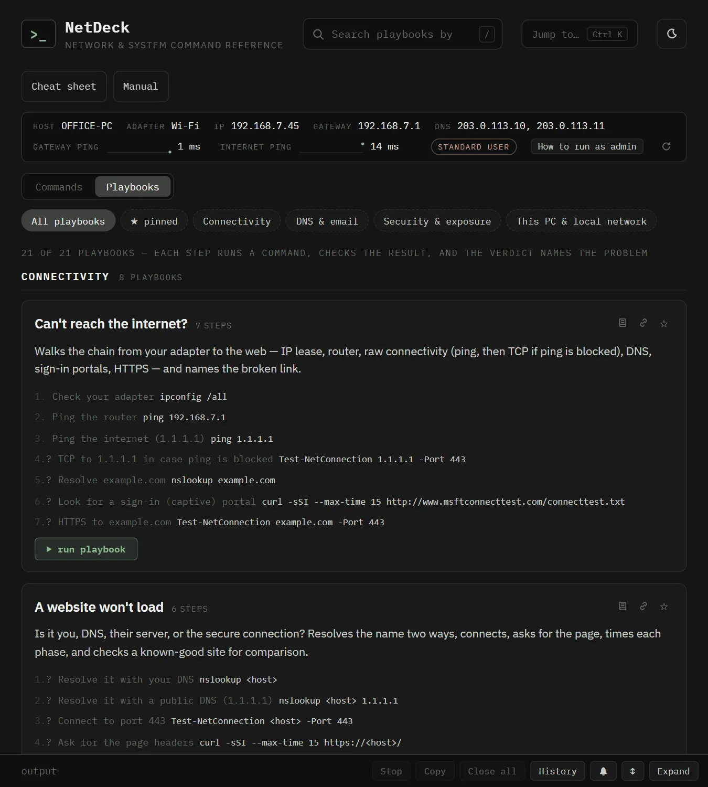
The Playbooks view: group chips under the view switch, a count, then each group with its playbooks. A “?” after a step number marks a step that only runs when an earlier result calls for it.
The screenshots in this chapter are real runs. The computer name, public IP addresses and the second half of MAC addresses have been replaced with placeholders.
While a playbook runs, each step shows a symbol and a summary:
○ pending
Hasn't started yet.
● running
In progress — output is streaming in behind the output button.
✓ pass
The check succeeded. The summary shows the key numbers (e.g. "4/4 replies, avg 12 ms").
! warn
It worked, but not cleanly — packet loss, or a service that isn't advertising.
✕ fail
The check failed. The summary says how.
i info
Worth reading, but not a fault — for example "Windows network browsing is switched off here", which is normal on Windows 10/11.
– skipped
Shown greyed out. not needed: the step only runs when an earlier result calls for it (you gave an IP address, so no name lookup; ping worked, so no TCP fallback). not run: an earlier step failed in a way that makes the rest pointless — no IP address means there's nothing to test — so the playbook stops rather than making you wait through a minute of timeouts. not detected: it needed something NetDeck couldn't find, such as a gateway. Steps marked with a ? on the playbook card are these conditional ones.
output
Click to see the raw text of that step, exactly as the command printed it. Hover a finished step to see how long it took.
table
Appears on steps whose output NetDeck can parse (the adapter check, the ARP cache). Opens the same sortable, filterable table you get from the Table button on a normal run, right inside the step.
The verdict box at the bottom is green (all clear), amber (attention), or red (problem found), and always says what to do next. When the next thing is obvious it offers buttons: run the playbook that narrows the problem down, or copy the fix-it command (such as ipconfig /flushdns) ready to paste into a terminal. Those commands change settings, so NetDeck copies them rather than running them.
Can't reach the internet?
The one to start with when "the internet is down". It walks the chain outward from your computer and stops at the first broken link:
Check your adapter — does the adapter you're actually using (the one in the context strip) have a real address and a gateway? It ignores virtual adapters from Docker, Hyper-V or a VPN, which otherwise hide a dead connection. A failure here stops the run (cable / Wi-Fi / DHCP problem). It also warns if a second adapter has a default route but no valid address, which can quietly capture your traffic.
Ping the router — does it answer, and quickly? Over 50 ms or any lost packets is flagged: on Wi-Fi that means weak signal or interference.
Ping the internet at 1.1.1.1 — does anything past the router answer?
TCP to 1.1.1.1(only if that ping failed) — many office networks block ping, so before blaming your provider it tries a real connection. If this works, you're online and ping is simply blocked.
Resolve example.com — do names still work? (fail → DNS problem; the verdict offers to run the DNS playbook)
Look for a sign-in portal — fetches Microsoft's connectivity test page. A redirect or a different page means hotel/café/guest Wi-Fi is waiting for you to sign in.
HTTPS to example.com — can you actually open a secure connection? (fail → firewall, proxy or security software)
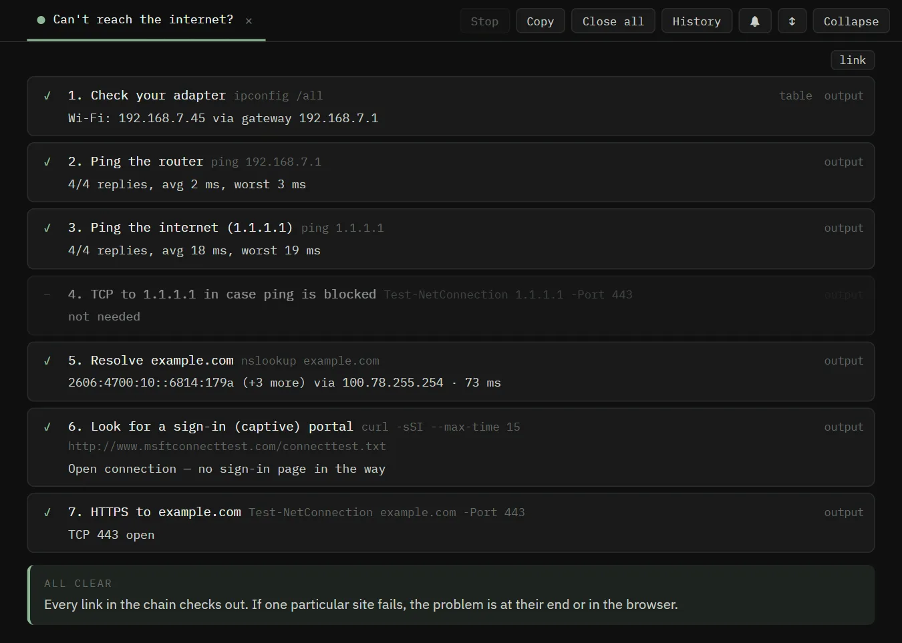
A healthy run. Step 4 is greyed out as “not needed” because the ping in step 3 worked; it only runs when ping is blocked.
Is a port open on a host?
Give it a host and a port (say github.com and 443). It resolves the name, pings the host, then tries the port. The point is telling apart situations that look identical in a browser:
The name doesn't exist — the run stops there.
Refused — the connection is rejected within a few seconds. The machine is up and said "no": nothing is listening on that port (service stopped, or it's on a different port).
Filtered — no response at all until the ~20-second timeout. A firewall is silently dropping the connection.
Nothing answers — neither ping nor the port. Only then does it run a quick route trace to show where the path stops: inside your own network, in your provider's, or beyond.
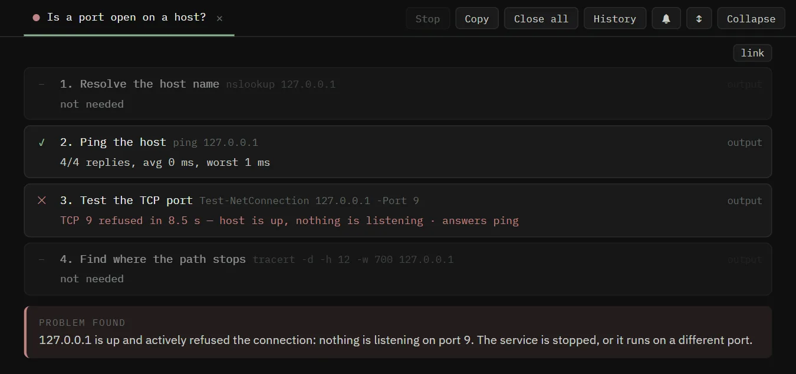
Port 9 on this same machine: the connection is rejected in a few seconds, so the verdict is “refused — nothing is listening”, and the route trace is skipped as not needed.
Is DNS healthy?
Looks up the same name through your configured DNS server, your second configured server if you have one (a dead backup server causes random multi-second stalls), then Cloudflare (1.1.1.1) and Google (8.8.8.8) — timing each answer. If yours fails and the public ones work, your router or provider's DNS is the culprit and the verdict tells you to switch. If they all fail, it's not DNS at all — you have no connectivity, and the verdict offers the internet playbook.
The last step asks for a name that cannot exist (it ends in .invalid). An honest resolver says "no such name"; if an address comes back, something — your provider's search page, a captive portal, a filtering product — is rewriting DNS answers. A lookup that succeeds only after a first attempt timed out is reported as slow, not broken.
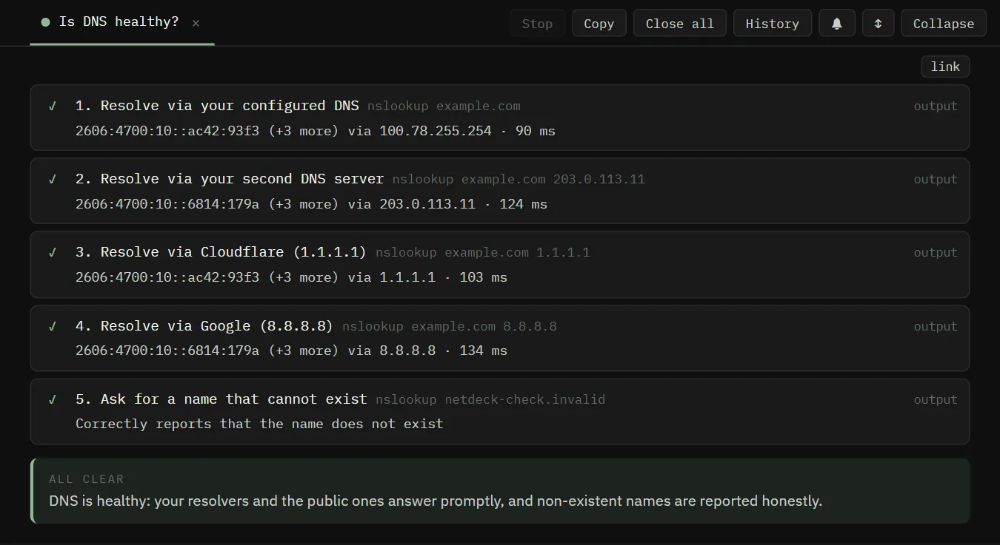
Both configured servers and both public resolvers answer, each with its response time, and the made-up name is correctly reported as non-existent.
Scan my network
Two steps now. First it asks devices to announce themselves over mDNS/Bonjour and UPnP, which is how TVs, speakers, printers, Apple and Google devices give their real names. Then it pings every address in your subnet at once and reads the ARP table. The table gains three things: the Name column fills from what devices said about themselves, a Seen column says when NetDeck first saw each device (NEW means never before), and every row has a probe button that runs the port probe on that address to ask what it is. The verdict adds what changed since the previous scan — new devices, devices that have gone, and devices that changed address — because NetDeck now remembers each scan (in this browser or app only; nothing leaves the PC). A new device turns the verdict amber so it is not missed.
NetDeck's IP scanner: it finds every device on your network, not just the ones this PC has talked to. There is nothing to type — it works out your subnet from your own address, pings all of its addresses at the same time (so 254 addresses take about six seconds, not four minutes), then reads the ARP table the sweep has just filled. That second step matters: phones, TVs and smart-home gadgets often ignore ping, but they cannot avoid answering ARP, so they still show up — marked no reply in the Ping column.
Press table for the full list: IP address, name (when the network can supply one — on home networks it usually can't), MAC address, manufacturer, whether it answered ping, and a note marking this PC and the router. Sort by Manufacturer to group things: five Wyze cameras, three eero units and so on. Two values in that column deserve explanation:
private address (randomised) — phones, tablets and recent laptops invent a random MAC address for each Wi-Fi network, for privacy. It belongs to no manufacturer, so it can't be identified this way. Usually these are your family's phones.
blank — the prefix is not in the IEEE registry NetDeck carries (the official list of every manufacturer's address blocks, about 54,000 entries, bundled with the app). That is rare for real hardware: it usually means a virtual adapter, a device faking its address, or a very new assignment — the registry is refreshed with each NetDeck release.
Anything you can't account for is worth tracking down; your router's own client list usually shows a name for each address. What it will not do: it only ever scans the private subnet this PC is on, never more than 254 addresses, and refuses to run on a public address — it's a "what's on my network" tool, not a general scanner. Reply times aren't shown, because pinging 254 addresses at once makes them meaningless; use ping on one device for that.
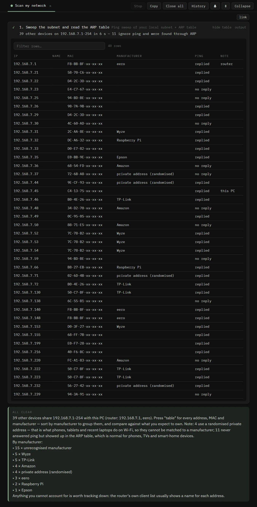
The two-step scan: devices that announced themselves first, then the sweep — with Name filled from discovery, a Seen column, and a probe button on every row.
Who's on my network?
Pings your router to freshen the cache, then reads the ARP cache (every device your computer has recently exchanged packets with), counting real devices on your network and ignoring broadcast and multicast entries. Press table on that step to see each device's IP and MAC address. The cache only knows devices you've exchanged traffic with, so quiet ones can be missing.
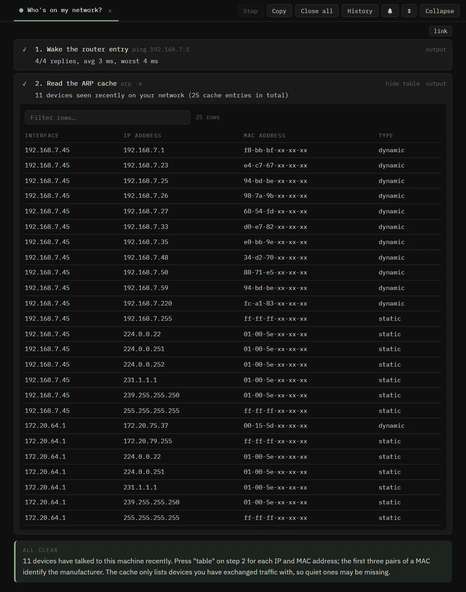
The ARP step with its table opened: one row per device, with interface, IP address, MAC address (last half hidden here) and type.
A website won't load
The most common complaint, and the hardest to untangle by hand. Give it the site (you can paste a whole address — it keeps just the host). It resolves the name with your DNS and with a public one, connects to port 443, asks for the page headers, times each phase of a real request, and — only if something failed — loads a known-good control site so it can tell "it's them" from "it's you". Possible verdicts:
Your DNS can't resolve it but public DNS can — stale cache, filtering, or a blocked name; offers the DNS playbook and the flush command.
The name doesn't exist — a typo, or the domain lapsed.
The site refuses or drops connections while the control site loads — it's at their end (or they are blocking you).
Nothing loads, control included — it's your connection; offers the internet playbook.
The secure connection fails — certificate or TLS error. Check this PC's clock first, then security software or a proxy.
HTTP 5xx — their server is erroring. 403 / 404 — the site is up; that page or your access is the issue.
It loads, slowly — and says which phase ate the time: looking up the name, reaching the server, setting up encryption, waiting for the server to build the page, or downloading.
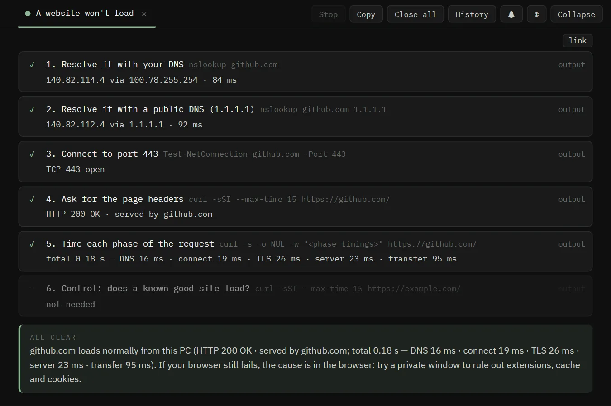
github.com from a working connection. Step 5 splits the request into phases — here the download itself is the largest part — and the control site is skipped because nothing failed.
Why is everything slow?
Twenty pings to your router and twenty to the internet — reporting average, worst case, jitter (how much the delay wobbles) and loss — then a timed DNS lookup and a timed web request, and the Wi-Fi link if you're on wireless. Takes about a minute. The logic is simple: if the numbers to your router are bad (a healthy link is 1–5 ms with almost no jitter), the problem is between this PC and the router — Wi-Fi signal, interference, a cable. If the router is clean but the internet numbers are bad, it's your provider or a saturated connection, and the verdict offers to trace the path. If both are clean it checks whether DNS or the web server was the slow part.
Windows 11 and Wi-Fi details
Windows now hides Wi-Fi signal information from programs unless Location services are on (Settings → Privacy & security → Location) or the program runs as administrator. When that happens the Wi-Fi step says so and the rest of the playbook still works.
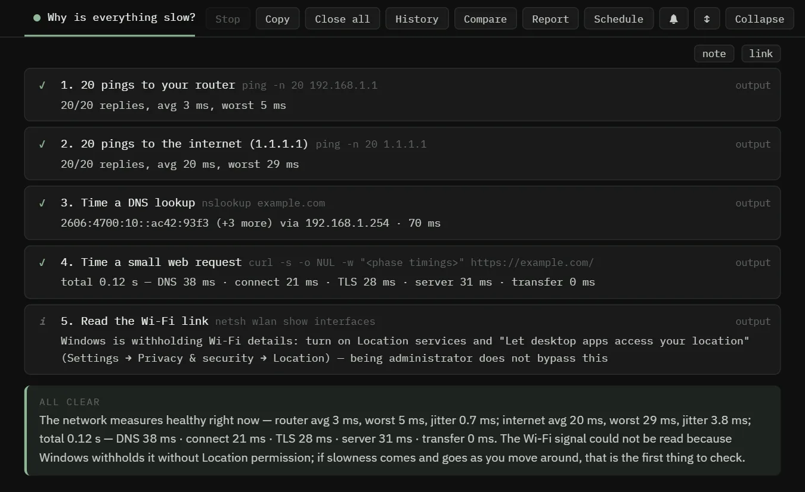
Twenty pings each to the router and to the internet, a timed lookup and a timed request. The verdict quotes average, worst case and jitter for both legs.
Does my connection drop out?
The three-minute version of the stability monitor, with a verdict: one ping a second to your router and to the internet, a line every ten seconds, runs of loss called out as they happen. Start it when the problem tends to happen and keep working; it needs no input and no admin rights. The verdict says whether dropouts are on the local link (router pings lost — Wi-Fi, cable, adapter, router), beyond the router (only internet pings lost — the ISP), or whether there is no loss but the delay wobbles (jitter, which calls and games feel). If three minutes is not enough to catch it, run the monitor command's 10-minute variant instead.
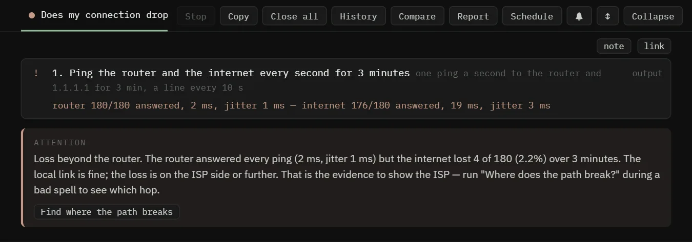
Three minutes of pings to the router and the internet, a line every ten seconds with a bar chart of the delay, and a verdict that separates the local link from everything beyond it.
Are packets being dropped on this PC?
The playbook behind the packet counters: for ten seconds it counts packets on every layer of this PC's network stack — the adapter, and the firewall, VPN and other filter drivers stacked on it — while it pings your router and the internet once a second and downloads a 5 MB test file from Cloudflare. Everything is measured in the same ten seconds, so the verdict can line the two up. It needs administrator rights (press Run as admin first; otherwise it just tells you so).
How to read the verdict:
Nothing dropped, every ping answered, download clean — there is no packet loss on this PC. If something still feels wrong, it's speed or something further away: try Why is everything slow? or Where does the path break?.
Drops on a Filter layer — software on this PC threw packets away. "WFP" is the Windows Filtering Platform, i.e. the firewall or a security product; a VPN's own driver shows under its name. A handful is normal (unsolicited inbound traffic and discovery chatter that the firewall is meant to block); hundreds during a stalled transfer are not.
Drops on the NIC row — the adapter or the link itself: Wi-Fi signal, a cable, a driver.
Router pings lost, nothing dropped here — packets left this PC cleanly and the router didn't answer: the problem is the link to the router.
Only internet pings lost — the loss is beyond your router.
1 s Wi-Fi: in 1290 out 301 ping: router 2 ms, internet 21 ms
2 s Wi-Fi: in 1180 out 288 DROPS 3 ping: router 1 ms, internet 22 ms
…
Ping: router 10/10 answered, avg 1 ms - internet 10/10 answered, avg 21 ms
Download: 5.0 MB in 3.1 s (12.9 Mbit/s)
Drops: 3, most on "WFP Native MAC Layer LightWeight Filter" (Filter), reason WFP_DROP
Where does the path break?
Runs a route trace (up to 20 hops) and reads it for you. It reports whether the destination was actually reached — tracert prints "Trace complete" even when the last hops never answered — where replies stop, and where latency steps up and stays up (one router replying slowly is normal and ignored). Each hop is labelled as your network, your provider's access network, or the internet, so "hop 2" becomes "the link to your provider". Press table for the hop list. Some hosts never answer traces; if the site works in a browser, a trace that goes quiet near the end means only that.
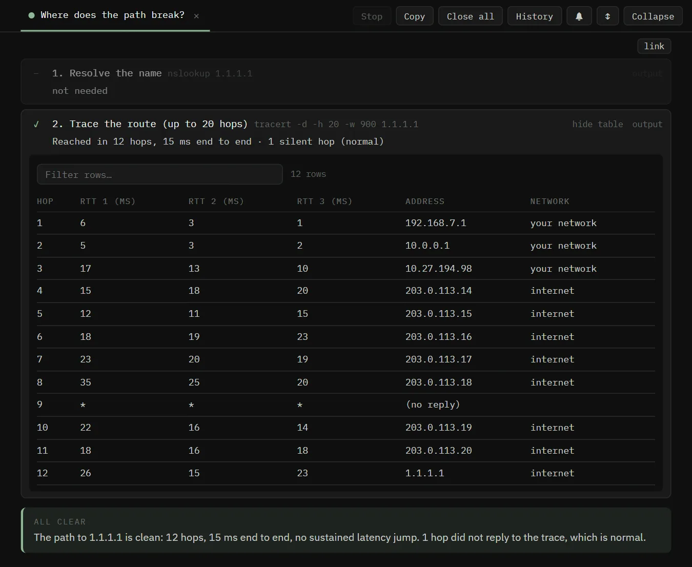
The route to 1.1.1.1 with the hop table opened: each hop’s three round-trip times, its address, and whether it belongs to your network, your provider or the internet.
What is this PC exposing?
Lists every TCP port this machine is listening on with the program behind it, split into reachable from the network (listening on all addresses) and local only (127.0.0.1, invisible to other machines). It flags remote-access and database services — Remote Desktop, VNC, Telnet, FTP, SQL Server, MySQL, PostgreSQL, Redis, MongoDB, the Docker API — which are the ones worth being sure about, and checks that Windows Firewall is on for every profile. Ports 135, 139 and 445 are standard Windows services, and the block of high ports (49152 and up) are Windows' own; both are summarised rather than listed one by one. "Reachable" means a program is listening; whether the firewall lets outsiders in depends on its rules.
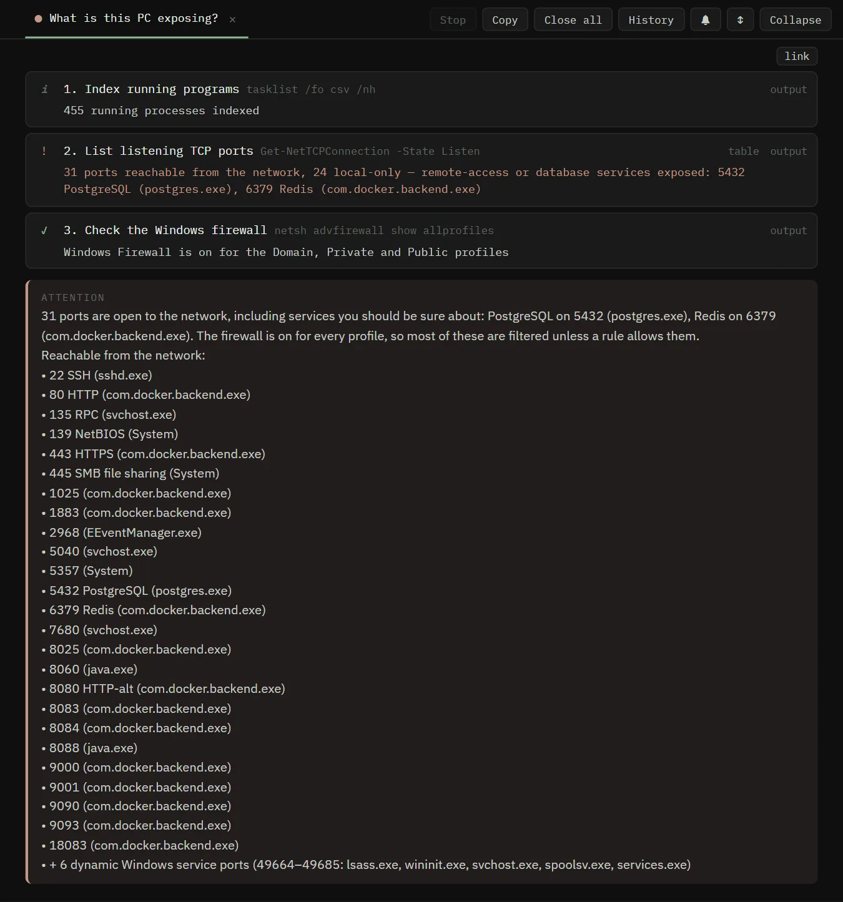
A developer PC: database ports published by Docker are flagged, ordinary Windows services are listed, and the dynamic high ports are summarised in one line.
Routing & adapter sanity
For "it works on Wi-Fi until I plug the cable in", half-connected VPNs, and connections that die for no visible reason. It reads the routing table for default routes — the "send everything else this way" rules. One is normal. Several means adapters are competing, and the lowest metric wins; the verdict lists them with the winner marked ▶. The dangerous case is an adapter that holds a default route but has no valid address (cable plugged in, DHCP failed): if it wins, your traffic goes nowhere. It also lists which DNS servers each adapter uses — a VPN adapter often takes DNS priority, which is why lookups may go to a server you don't recognise.
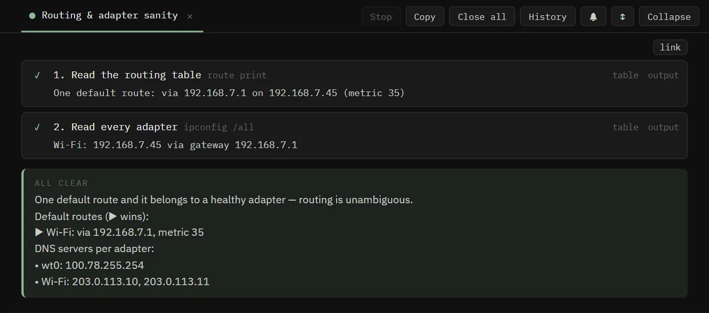
One default route, marked ▶, on a healthy adapter — and the DNS servers each adapter uses, which shows a VPN adapter supplying its own.
Did my DNS change propagate?
For when you've changed a DNS record and want to know who sees it yet. It finds the domain's authoritative nameservers (looking in the parent zone if you gave a host like www.example.com), asks them directly — that's the truth — and compares the answers from your resolver, Cloudflare, Google and Quad9. Resolvers that differ are serving a cached copy that updates when the old record's TTL expires; nothing to fix, just wait (or flush your own cache). If the two authoritative servers disagree with each other, the zone hasn't synchronised at your DNS host, which is worth fixing first.
Large sites rotate or geo-balance their addresses, so every query gets a different answer. The playbook detects this by asking the same authoritative server twice; when it sees rotation it compares network ranges instead of exact addresses, and says so.
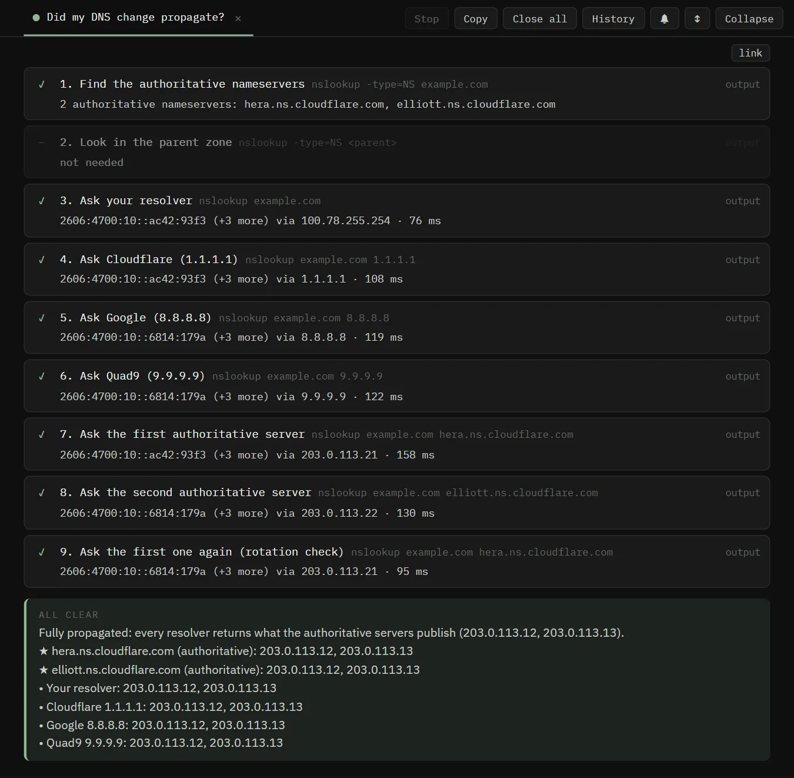
The authoritative servers (★) compared with four resolvers for example.com.
Wi-Fi health
Reads your wireless link — signal strength, band (2.4 or 5 GHz), radio mode, link rate — then surveys nearby access points to count how many strong ones share or overlap your channel, and sends twenty pings to the router to see how steady the link really is. Flags weak signal (under 55%), the crowded 2.4 GHz band, old radio modes and low link rates; on 2.4 GHz it suggests the quietest of channels 1, 6 and 11. On Windows 11 the first two steps need Location services on (or an administrator shell); without that the ping test still tells you whether the link is steady.
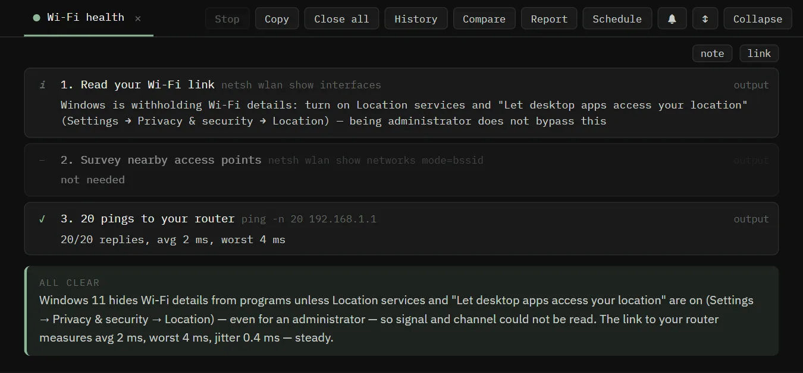
On Windows 11 without Location permission the link details are withheld, and the playbook says so; the twenty pings still show whether the link is steady.
Can I reach that service?
Give it one host. It checks the name and ping, then tries the common service ports in a single run — HTTPS 443, HTTP 80, SSH 22, Remote Desktop 3389, SMB file sharing 445, SQL Server 1433 — and lists each as open, refused (the machine is up, nothing is listening) or filtered (a firewall drops it). If the host answers neither ping nor the web ports it stops early rather than waiting out every timeout. This is a small port sweep: use it on machines you're responsible for.
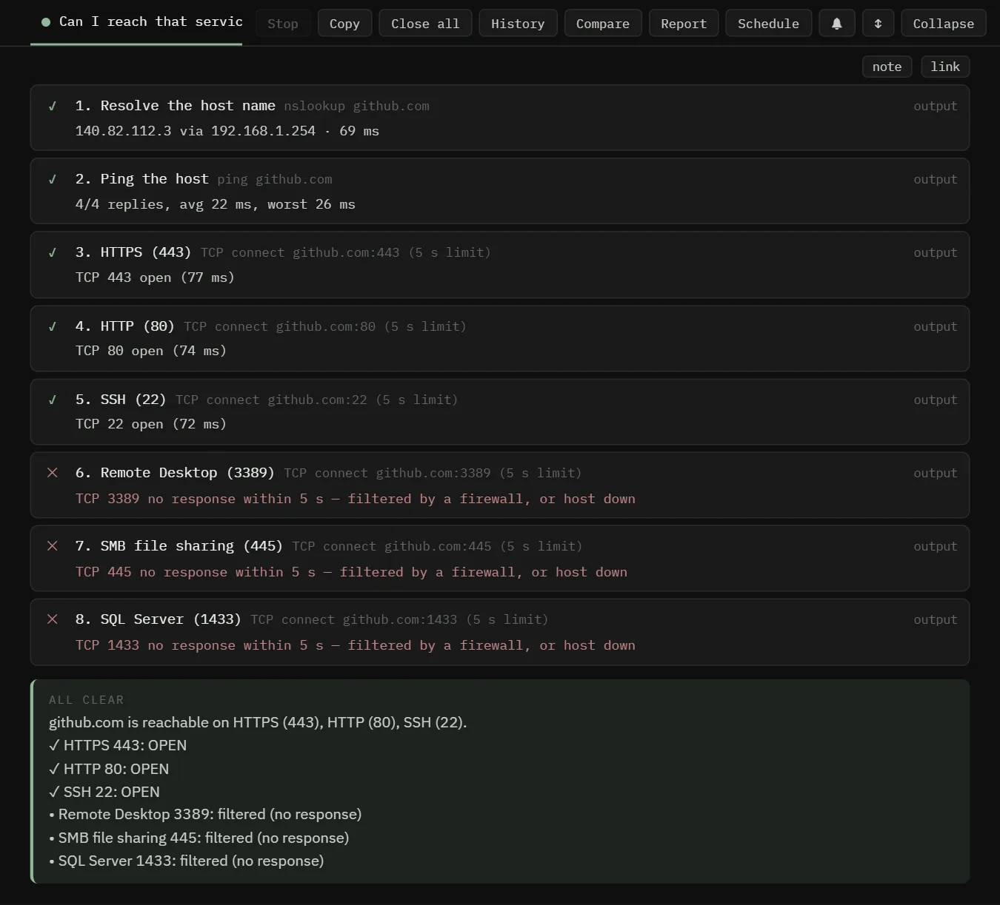
github.com: web and SSH are open; Remote Desktop, file sharing and SQL get no response. Six ports in about twenty seconds.
MTU check — "some sites hang"
Every network path has a largest packet size, its MTU (Maximum Transmission Unit) — normally 1500 bytes; less over PPPoE, VPNs and tunnels. It sends pings marked "don't fragment" at decreasing sizes and stops at the first that gets through; that size plus 28 bytes of headers is your path MTU. A smaller MTU is fine as long as the "packet too big" messages reach you. When a firewall blocks them, small transfers work and large ones silently stall: pages half-load, uploads hang, VPNs feel flaky. The verdict gives the number to set on the adapter or VPN if you have those symptoms.
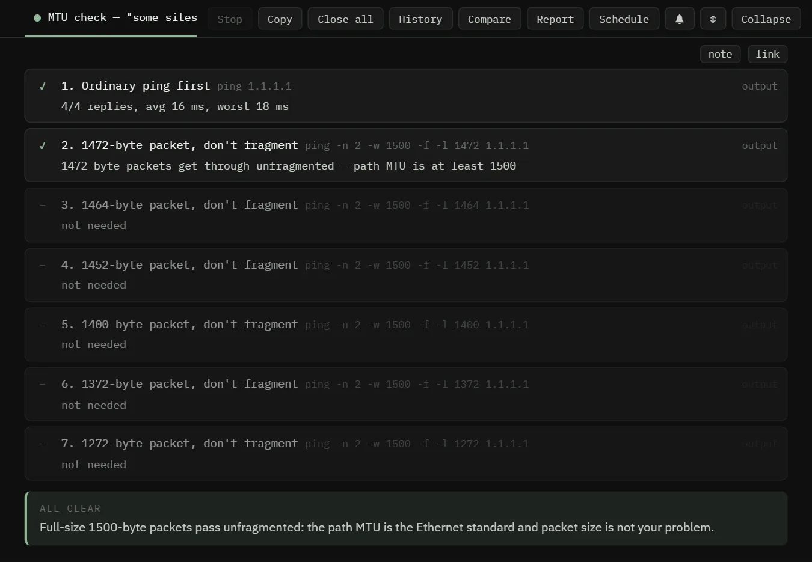
Full-size packets pass on the first try, so the smaller sizes are skipped.
Email delivery check
Give it a domain (the part after the @). It looks up the MX records (which servers receive its mail), checks for an SPF record (which servers may send as this domain) and a DMARC record (what receivers should do with forgeries) — missing ones are the usual reason legitimate mail lands in spam — and tries port 25 on the first mail server. Expect that last step to fail on home and most office connections: providers block outbound port 25, and mail programs use 587 or 465 instead. The verdict says so rather than calling it a fault.
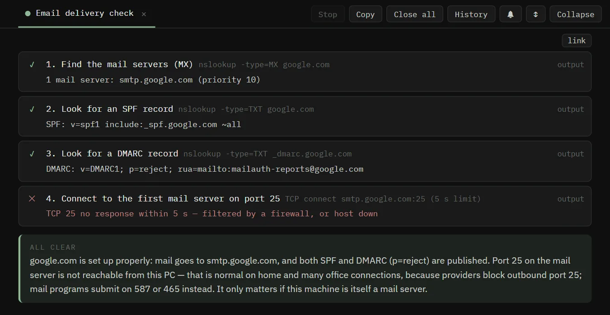
google.com: mail servers, SPF and DMARC all present. Port 25 is blocked from this connection, which the verdict explains is normal.
PC health snapshot
The quick triage for "my computer is slow", no networking involved: days since the last restart (over two weeks is flagged), memory in use (over 90%), free space on each drive (under 10% warns, under 5% fails — Windows slows down and updates fail), programs that are "Not responding", the five biggest memory users with their process counts, and how long ago Windows last installed an update (over 60 days suggests Windows Update is stuck).
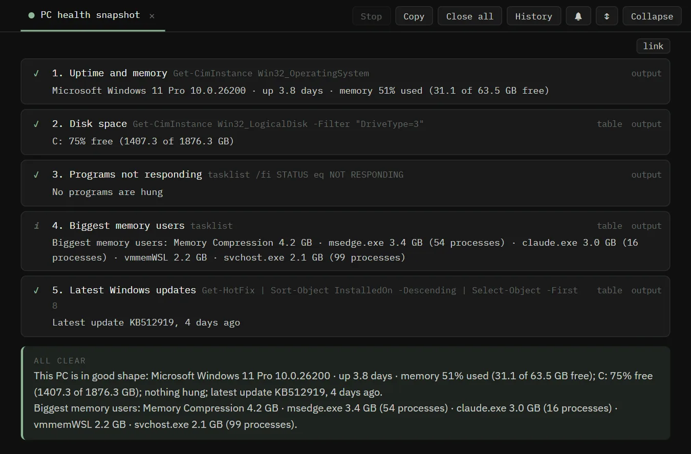
Uptime, memory, disk, hung programs, the biggest memory users and the most recent update, in one pass.
Clock & time sync
Measures your clock against time.windows.com. Within a second is healthy. A clock that is minutes out breaks things that seem unrelated: every HTTPS site shows certificate errors (certificates look expired or not yet valid), and logins to work accounts fail (Kerberos allows five minutes). The second step shows where the clock syncs from; on a home PC the Windows Time service is usually idle between scheduled syncs, which is normal. If the clock keeps drifting back, the motherboard battery may be failing.
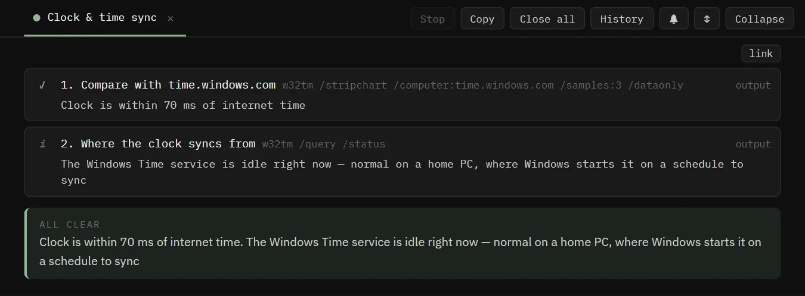
The clock is within a fraction of a second; the idle time service is reported as information, not a fault.
Who is this PC talking to?
Every live outbound connection, grouped by program: how many connections each has, and to which ports. Ports 80 and 443 are ordinary web traffic; anything else is listed so you can recognise it. Press table for each connection with its remote address. Useful for "what's using my connection right now?" and for noticing a program you don't recognise phoning home.
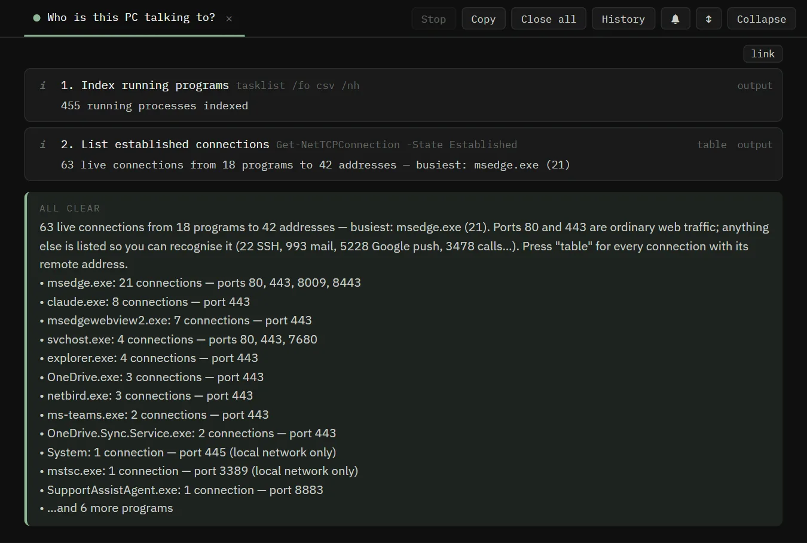
Live connections grouped by program, with the ports each one uses.
DHCP lease & address conflicts
Shows whether your address is leased or typed in by hand, which DHCP server issued it and how long is left (Windows renews at the halfway point, so a few hours left is normal), whether that server still answers, and whether Windows has logged another device using your IP address. A recent conflict explains connections that drop at random: two devices with one address knock each other offline. An event from more than a month ago is reported as history, not a fault.
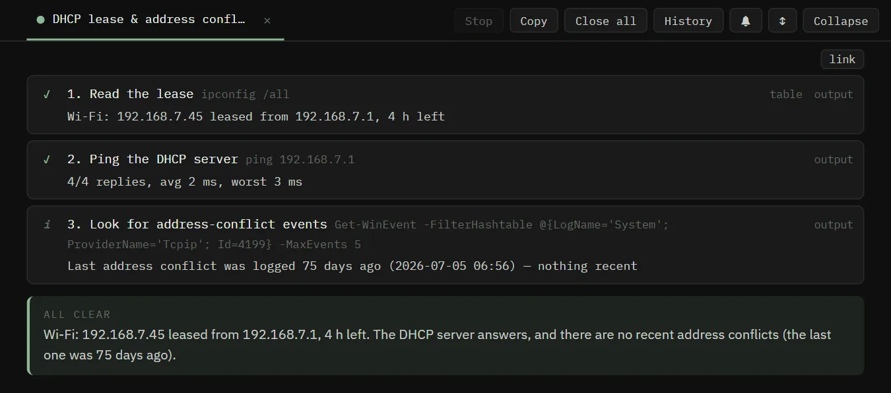
A leased address with time remaining, a DHCP server that answers, and an old conflict reported as history rather than a current problem.
Is my DNS honest?
Two steps: the DNS honesty check (who answers your lookups, tampering and interception tests, VPN leak, encryption) and the hosts file & DNS cache audit (redirections on this PC itself). The verdict names the one thing that matters: a hosts-file hijack (scan the PC), a tampering resolver (switch it — the verdict offers the command to copy), interception on this network (use encrypted DNS), a VPN leak (set the VPN's DNS), or honest-but-unencrypted (optional: encrypt it). No input, no admin.
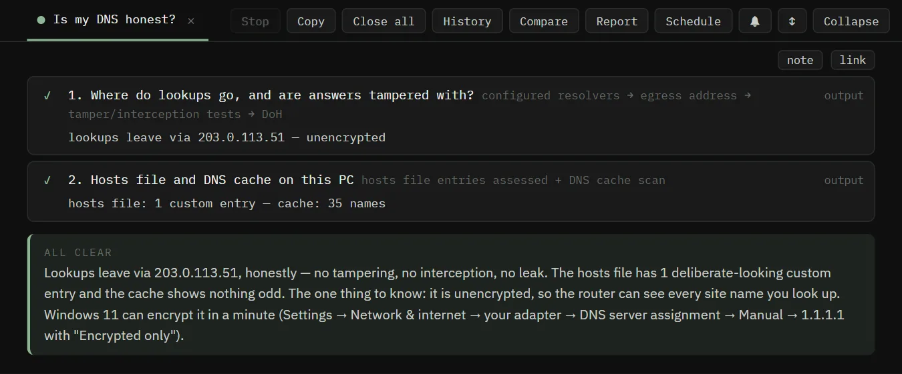
Both steps green: lookups leave via the office resolver, no tampering, no interception, nothing pinned in the hosts file — and the one thing to know, that it is unencrypted.
Router check-up
The router check-up with a verdict: telnet open is a fail, UPnP forwards or TR-069 are worth knowing about, otherwise healthy — with a reminder of the two things it cannot check for you, firmware and the admin password. Only ever your own gateway; read-only.
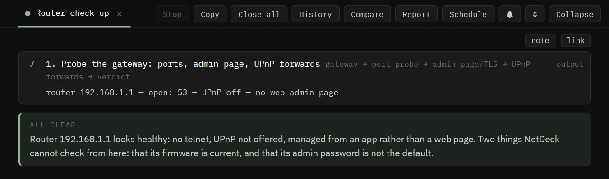
The gateway from the inside: web admin on 80/443 and SSH open, no telnet, no TR-069, UPnP not offered. Healthy — with the two things it cannot check for you spelled out.
Proxy & HTTPS inspection
Shows any proxy configured system-wide or for your account, then connects to a well-known site and reads the certificate it presents to you. Normally that's signed by a public certificate authority. If it's signed by a security product instead — Zscaler, Fortinet, Sophos, an antivirus "web shield" — your HTTPS traffic is being decrypted and re-signed on the way. On a work PC that's usually policy; on a personal one it's worth knowing about.
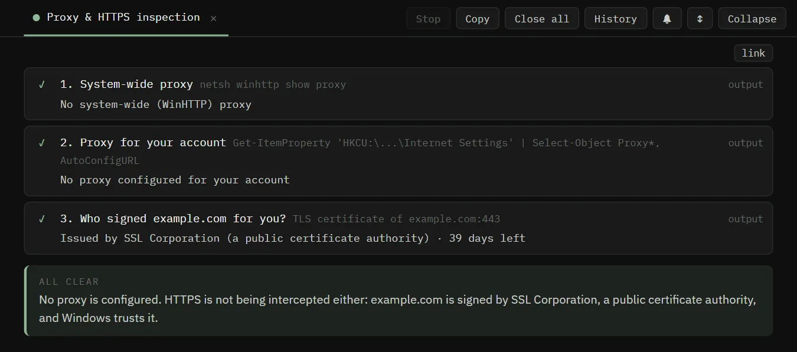
No proxy, and example.com’s certificate reaches this PC signed by a public authority — nothing is re-signing the traffic.
IPv6 check
Most networks are fine either with working IPv6 or with none. The troublesome case is half-working IPv6: you have a global address but nothing is reachable over it, so programs try IPv6 first, wait for it to fail, and only then fall back — sites hesitate for seconds. The playbook checks for a global address (link-local fe80:: and private fd… addresses, such as a VPN assigns, don't count), and if there is one, pings and loads an IPv6-only site.
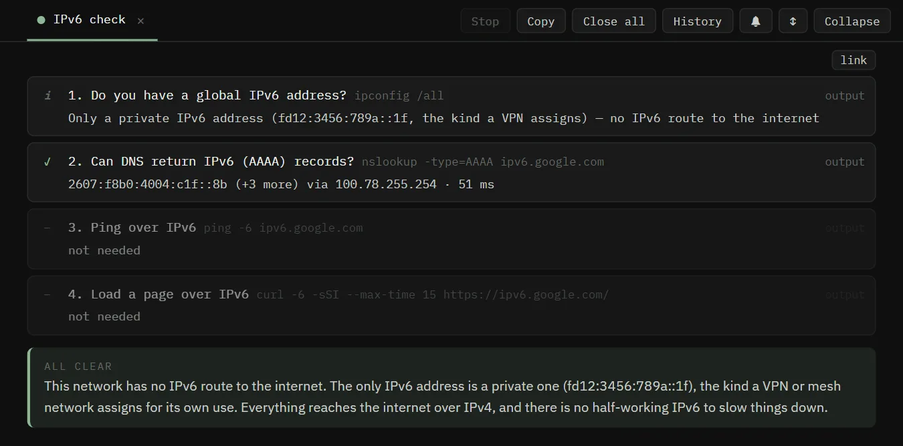
A network with no IPv6 route to the internet: the only IPv6 address is a private one from a VPN, so the IPv6 tests are skipped.
Command reference
Every card in the app, explained. Each entry says what the command is for in everyday terms, shows a trimmed example of what it prints, and points out the lines worth reading. runnable means it has a run button; copy only means you'd run it yourself in a terminal.
Network configuration & interfaces
ipconfig /all★WINrunnable
The "who am I on this network" command. Lists every network adapter in the computer with its IP address, MAC address, gateway, DNS servers, and whether the address came from DHCP. Without /all you get a shorter summary.
How to read it: find the adapter you're using (Wi-Fi or Ethernet) and check three lines — IPv4 Address (your address; 169.254.x.x means DHCP failed), Default Gateway (your router; blank means you can't reach anything), and DNS Servers. "Media disconnected" under an adapter just means nothing is plugged in there.
Linux / macOS:ip addr (Linux) or ifconfig (macOS, older Linux).
ipconfig /release · ipconfig /renewWINcopy only
Gives your current IP address back to the router, then asks for a fresh one. This is the "turn it off and on again" of IP addresses — the fix when you have a 169.254 address, or after moving between networks. Your connection drops for a few seconds while it runs, which is why NetDeck won't run it for you.
ipconfig /release
ipconfig /renew
Linux / macOS:dhclient -r then dhclient; on modern desktops, toggling the connection off and on does the same.
ipconfig /flushdnsWINcopy only
Empties the list of name-to-address answers Windows has memorised. Use it when a website moved to a new server and your computer keeps going to the old one, or after changing DNS settings. Harmless, but it changes state, so it's copy-only.
ipconfig /flushdns
Successfully flushed the DNS Resolver Cache.
Linux / macOS:resolvectl flush-caches (Linux); sudo dscacheutil -flushcache (macOS).
ipconfig /displaydnsWINrunnable
Shows what's currently in that memorised list — every name your computer has looked up recently and the address it got. Handy for "why does this site go to the wrong place?" and for seeing what a program has been contacting. Table view lists one record per row.
example.com
----------------------------------------
Record Name . . . . . : example.com
Record Type . . . . . : 1
Time To Live . . . . : 2841
Section . . . . . . . : Answer
A (Host) Record . . . : 93.184.215.14
How to read it: "A (Host) Record" is the address the name currently points to; "Time To Live" is how many seconds until Windows asks again.
Linux / macOS:resolvectl statistics.
netshWINcopy only
Windows' Swiss-army knife for changing network settings from the command line: interfaces, Wi-Fi profiles, the firewall, port forwarding. It's a whole sub-language rather than one command, so NetDeck lists it for reference. A few useful read-only forms:
netsh wlan show profiles saved Wi-Fi networks
netsh wlan show interfaces current Wi-Fi signal and speed
netsh interface ip show config like ipconfig, with more detail
netsh advfirewall show allprofiles
Linux / macOS:nmcli (network manager), ip, iw (Wi-Fi).
Wi-Fi surveyPSrunnable
Every access point your adapter can hear — name, band, channel, signal, security, Wi-Fi generation — sorted by strength, with your own network marked, then a channel-load table and a verdict: is your channel crowded, and which channel would be quieter. Under the hood it is netsh wlan show networks mode=bssid plus the overlap arithmetic (on 2.4 GHz, channels within four of each other collide; on 5 GHz only the same channel does). Windows 11 only shares this with programs when Location services are on — being administrator does not bypass it. Settings → Privacy & security → Location: turn on both Location services and Let desktop apps access your location (you can turn them off again afterwards). The run says so if it is blocked.
Wi-Fi survey: 8 access points in range on 6 x 2.4 GHz, 2 x 5 GHz, 0 x 6 GHz. You are on "HomeNet" (2.4 GHz, channel 6, 84% signal, Wi-Fi ax)
Network Band Channel Signal Security Standard BSSID Note
------- ---- ------- ------ -------- -------- ----- ----
HomeNet 2.4 GHz 6 84% WPA2-Personal ax f8:bb:bf:00:11:22 yours
HomeNet 5 GHz 36 71% WPA2-Personal ax f8:bb:bf:00:11:23 your network, other AP
NETGEAR42 2.4 GHz 6 62% WPA2-Personal ac a0:04:60:aa:bb:cc overlaps your channel
xfinitywifi 2.4 GHz 8 55% Open n 5c:e3:0e:11:22:33 overlaps your channel
…
Fine: 84% signal on channel 6 (2.4 GHz); 2 strong networks overlap it, which is normal in a neighbourhood. Channel 1 has only 1 strong network on or near it; 6 has 2. Setting the router to channel 1 (or to Auto) should help.
How to read it: signal above ~60% is good, below ~40% is the reason for drops and slow rates. "Overlaps your channel" networks share airtime with you — every one of them that is busy slows you down. If your network appears twice, once per band, prefer 5 GHz (faster, far less crowded) whenever its signal is decent; the 2.4 GHz band carries further but is where every neighbour, microwave and baby monitor lives. The suggested channel only counts strong networks; weak ones barely matter.
Linux / macOS:nmcli dev wifi list; on macOS hold Option and click the Wi-Fi icon for your own link, or use the Wireless Diagnostics scan.
getmacWINrunnable
Lists the MAC address of each adapter — the hardware serial number burned into the network card. You need it when a router or a company network only lets known devices connect ("MAC filtering").
Physical Address Transport Name
=================== ==========================================================
A4-6B-B6-12-34-56 \Device\Tcpip_{8E1F...}
00-1C-42-00-00-08 Media disconnected
Linux / macOS:ip link.
Proxy settings (user)PSrunnable
Reads the proxy your Windows account is set to use — the same values as Settings → Network & internet → Proxy. ProxyEnable : 1 with a ProxyServer means web traffic goes through that server; AutoConfigURL is a script that decides per site. A forgotten or malicious proxy setting is a classic cause of "the internet works in one browser but not another". The system-wide proxy is a separate setting: see the netsh variant winhttp show proxy.
Linux / macOS:env | grep -i proxy.
Connectivity & routing
ping <host>WINL/Mrunnable
The most basic question in networking: "are you there?" It sends four small packets to the host and waits for echoes. The reply time (latency) tells you how far away the host is in network terms; missing replies tell you something in between is dropping packets.
Pinging 1.1.1.1 with 32 bytes of data:
Reply from 1.1.1.1: bytes=32 time=11ms TTL=57
Reply from 1.1.1.1: bytes=32 time=12ms TTL=57
Reply from 1.1.1.1: bytes=32 time=10ms TTL=57
Reply from 1.1.1.1: bytes=32 time=11ms TTL=57
Ping statistics for 1.1.1.1:
Packets: Sent = 4, Received = 4, Lost = 0 (0% loss),
Approximate round trip times in milli-seconds:
Minimum = 10ms, Maximum = 12ms, Average = 11ms
How to read it: under 20 ms is your own network or very close; 20–80 ms is a normal internet hop; hundreds of ms is another continent or a struggling link. "Request timed out" means no reply at all; "Destination host unreachable" means your own computer doesn't know a way to get there (usually no gateway). Some servers ignore pings on purpose, so a failed ping doesn't always mean the host is down.
Linux / macOS:ping <host> — but it runs forever until you press Ctrl+C; use ping -c 4 for four.
tracert <host>★WINrunnable
Shows the route your packets take: every router ("hop") between you and the destination, with the time to reach each. When a site is slow or unreachable, this shows where along the path things go wrong.
Tracing route to one.one.one.one [1.1.1.1]
over a maximum of 30 hops:
1 1 ms 1 ms 1 ms 192.168.7.1← your router
2 10 ms 9 ms 11 ms 96.120.14.1 ← your provider
3 12 ms 11 ms 12 ms 68.85.107.33
4 * * * Request timed out. ← a router that hides itself; fine
5 11 ms 12 ms 11 ms 1.1.1.1
Trace complete.
How to read it: times should grow gradually. A big jump between two hops is where the delay lives. A single line of * is normal (many routers don't answer); * from some hop onward means the path is blocked there. NetDeck runs it with -d (skip name lookups) so it's faster.
Linux / macOS:traceroute <host> or tracepath <host>.
pathping <host>WINrunnable
A slow, thorough tracert: it finds the route, then pings every hop 100 times and reports how many packets each one lost. This is the tool for intermittent problems — a connection that "mostly works" — because it pins the loss on one specific hop. Expect it to take several minutes; the Stop button is there if you lose patience.
Computing statistics for 125 seconds...
Source to Here This Node/Link
Hop RTT Lost/Sent = Pct Lost/Sent = Pct Address
0 DESKTOP [192.168.7.45]
0/ 100 = 0% |
1 1ms 0/ 100 = 0% 0/ 100 = 0% 192.168.7.1
12/ 100 = 12% | ← the link after the router is losing packets
2 14ms 12/ 100 = 12% 0/ 100 = 0% 96.120.14.1
Linux / macOS:mtr <host> — the same idea, updating live.
Speed testPSrunnable
A proper speed test without a website or an app: it downloads from and uploads to Cloudflare's public test server (speed.cloudflare.com, the same one behind their speed-test page) for about eight seconds each, printing a line per second, and pings 1.1.1.1 the whole time. That last part is the bit most speed tests skip: latency under load. A connection can be fast and still make video calls stutter whenever someone downloads, because the router queues packets instead of dropping them — "bufferbloat". Variants: download only, upload only. It moves up to ~300 MB, so think twice on a metered connection.
Speed test via Cloudflare (server IAD), your public address 203.0.113.5
Idle latency: 20 ms to 1.1.1.1 (jitter 7 ms), 53 ms server round trip
Download (8 s)
1 s 33.2 MB 265.3 Mbit/s ping 21 ms
2 s 56.5 MB 186.7 Mbit/s ping 28 ms
…
Download: 268.3 Mbit/s (275 MB in 8.2 s)
Upload (up to 8 s)
2 MB in 0.71 s = 22.5 Mbit/s
25 MB in 5.13 s = 39 Mbit/s
Upload: 39 Mbit/s (best of the sizes tried)Latency under load: download 26 ms, upload 30 ms vs 20 ms idle (+10 ms) -> bufferbloat grade A - none
How to read it: compare Download and Upload with what you pay for (an ISP's "300 Mbit/s" is a ceiling; 80–90% of it over Ethernet is normal, less over Wi-Fi). The upload figure is the best of several sizes, because the small first upload is dominated by connection setup. The bufferbloat grade is the increase in ping while transferring: A (under 30 ms) is fine; C or D means calls and games will suffer whenever anything else is transferring — fixed by turning on "Smart Queue Management" / "QoS" on the router, or a router that has it.
What it doesn't tell you: a single run is a snapshot — run it again at a busy hour, and over Ethernet if you can, before blaming the ISP. Cloudflare sees your public address, as any website does; nothing else about you is sent.
Linux / macOS:curl -o /dev/null -w '%{speed_download}
' 'https://speed.cloudflare.com/__down?bytes=100000000' prints bytes per second.
Connection stability monitorPSrunnable
For "it drops every few minutes" — a problem no ten-second test will catch. It pings your router and the internet (1.1.1.1) once a second for 1, 3, 5 or 10 minutes, prints a line every ten seconds with a small bar chart of the delay (a × marks a lost ping), calls out runs of consecutive loss as they happen, and ends with a table and a plain verdict. Start it, leave it in its tab, and carry on working; the point is to have it running when the dropout happens.
0:10 router 1 ms max 2 ▁▁▁▁▁▁▁▁▁▁ | internet 18 ms max 24 ▁▁▂▂▁▁▁▁▁▁
0:20 router 2 ms max 3 ▁▁▁▂▁▁▁▁▁▁ | internet 19 ms max 31 ▁▂▁▁▁▂▁▁▁▁
0:30 router 1 ms max 212 ▁▁▁×××█▁▁▁ 3 lost | internet 20 ms max 240 ▁▁▁×××█▁▁▁ 3 lost
⚠ 0:24 router: 3 pings lost in a row
⚠ 0:24 internet: 3 pings lost in a row
Summary over 3 min
Target Sent Lost Loss % Avg ms Max ms Jitter ms Bursts Longest burst
------ ---- ---- ------ ------ ------ --------- ------ -------------
router (192.168.7.1) 180 3 1.7 1 212 2 1 3
internet (1.1.1.1) 180 3 1.7 19 240 3 1 3
Dropouts on the local link: the router itself failed to answer 3 of 180 pings (1.7%, 1 run of loss, longest 3 s). That is between this PC and the router…
How to read it: the two targets split the problem in half. If the router loses pings, the fault is on your side of it — Wi-Fi signal or interference, a cable, the adapter's power saving, a router that reboots — and the internet loses the same pings at the same moments because they never got out. If only the internet loses pings while the router answers every one, the local link is fine and the loss is on the ISP's side or further; that table is the evidence to show them. Jitter is how much the delay wobbles: under ~10 ms to the router and ~30 ms to the internet is fine; more than that makes calls and games stutter even when pages load. A stray lost ping or two over several minutes is normal; runs of loss (the ⚠ lines) are not.
Linux / macOS:ping -i 1 1.1.1.1 and read the summary when you stop it; mtr --report --report-cycles 60 1.1.1.1 does the per-hop version.
Adapter throughput (live)PSrunnable
"Is anything using my connection right now?" It reads every adapter's byte counters once a second for 15 seconds (variants: 60 s, 3 min) and prints the rate in and out, with a bar per second, then a summary table with averages, peaks, totals and a bar chart of the whole run. Nothing is captured and no admin is needed.
1 s Ethernet in 0.12 out 0.04 Mbit/s ▂
2 s Ethernet in 48.30 out 1.10 Mbit/s ▆
3 s Ethernet in 52.11 out 1.02 Mbit/s ▇
…
Adapter Link Avg in Avg out Peak in Peak out Received Sent Activity
------- ---- ------ ------- ------- -------- -------- ---- --------
Ethernet 1 Gbps 31.40 0.72 52.11 1.10 58.9 MB 1.3 MB ▂▆▇▇▇▆▅▁▁▁▁▁▁▁▁
Busy: Ethernet averaged 31.4 Mbit/s in and 0.7 Mbit/s out, peaking at 52.1 in / 1.1 out - 5% of the 1 Gbps link at the peak. That is real traffic from this PC. "Per-process network activity" names the program…
How to read it: a steady rate with nothing open is the interesting case — backups, cloud sync, updates, or something you did not install. "Idle" means under 0.2 Mbit/s throughout, so a slow internet is not this PC's doing. Virtual adapters (Hyper-V, WSL, VPN) only appear when they carry traffic.
Linux / macOS:ifstat 1, nload, or watch -n1 cat /proc/net/dev.
Listening ports — who and whether reachablePSrunnable
The deeper version of "what is this PC exposing": every listening TCP port and UDP endpoint with the program behind it, the Windows service if it is one, who digitally signed the program, when it started, and — the important column — whether the firewall actually lets the network reach it. A port bound only to localhost cannot be reached from outside at all; a port bound to all addresses is reachable only if an inbound rule on the current network profile admits it.
41 listening ports (26 TCP, 15 UDP below 49152): 6 reachable from the network, 12 localhost only.
Port Proto Service Bound Process PID Windows service Signer Started Firewall
---- ----- ------- ----- ------- --- --------------- ------ ------- --------
22 TCP SSH all addresses sshd 6336 sshd (no access) allowed: OpenSSH SSH Server
5432 TCP PostgreSQL all addresses postgres 8320 (no access) allowed: PostgreSQL
4573 TCP localhost only node 2853 Node.js Foundation Sep 23 09:10 n/a (local)
Reachable from the network: TCP 22 (SSH) - sshd; TCP 5432 (PostgreSQL) - postgres …
How to read it: the "Reachable" list at the bottom is what other devices on this network can connect to. Windows' own entries (RPC 135, SMB 445, NetBIOS, the mDNS/LLMNR/SSDP discovery ports, Delivery Optimization 7680) are normal on a private network. Anything else should be a program you deliberately serve from this PC — a database, SSH, a media server. "UNSIGNED" in Signer is not proof of anything bad, but an unsigned listener you cannot name deserves a look. "(no access)" means the program runs as SYSTEM; Run as admin shows its path and signer.
Linux / macOS:sudo ss -tulpn or sudo lsof -i -P -n | grep LISTEN.
route printWINrunnable
Shows the routing table — the rules your computer uses to decide where to send each packet. Most people only need one line from it: the 0.0.0.0 row, which is the "everything else goes here" rule, i.e. your default gateway. Two of those rows on different adapters explains a lot of "sometimes my VPN / Ethernet takes over" mysteries.
How to read it: "On-link" means "directly reachable, no router needed". Lower Metric wins when two routes match. Table view lets you sort by any column.
Adds or removes a rule in that table — for example, "send everything for 10.0.0.0/8 through the VPN's gateway". Needs admin rights and a wrong rule can cut you off, so it's copy-only.
Lists every network connection your computer has open right now, and every port it's listening on, with the ID of the program responsible. The letters: -a all connections, -n numbers instead of names (much faster), -o show the owning process ID. Answers "what's using port 3000?" and "what is this program talking to?".
Proto Local Address Foreign Address State PID
TCP 0.0.0.0:22 0.0.0.0:0 LISTENING 5636
TCP 0.0.0.0:443 0.0.0.0:0 LISTENING 21920
TCP 192.168.7.45:52114 140.82.112.22:443 ESTABLISHED 8840
TCP 192.168.7.45:52120 52.96.166.2:443 TIME_WAIT 0
UDP 0.0.0.0:5353 *:* 3204
How to read it:Local Address ends in the port number. LISTENING = a server on your machine waiting for connections; ESTABLISHED = a live connection to the Foreign Address; TIME_WAIT = recently closed, ignore. 0.0.0.0 means "on every address". Switch to Table view: NetDeck adds a Process column so the PID becomes a program name, and you can filter by port or state.
Linux / macOS:ss -tulpn (Linux) or netstat -tulpn; on macOS lsof -i -P.
Get-NetTCPConnectionPSrunnable
PowerShell's version of netstat for TCP. Same information, but as proper columns that are easier to sort and filter — and in PowerShell scripts you can pipe it to other commands. NetDeck sorts it by state; Table view adds the process name.
"Can I reach this port on that machine?" — the question behind almost every "the app can't connect" ticket. It pings the host and then tries to open a real TCP connection on the port. Common ports: 80 (web), 443 (secure web), 22 (SSH), 3389 (Remote Desktop), 445 (file sharing), 25/587 (email), 3306/5432 (databases).
How to read it:TcpTestSucceeded : True is the answer you want. False with PingSucceeded : True means the machine is up but nothing is listening on that port (or a firewall blocks it). Both false: the machine is down or unreachable. A warning about "name resolution" means the host name is wrong or DNS is broken.
Linux / macOS:nc -zv <host> 443 or telnet <host> 443.
Per-process network activityPSrunnable
Which programs are on the network. The default is a snapshot: every program with a socket, how many established connections and listening ports it has, and the remote addresses it talks to most. The with traffic variant (admin) goes further: it records 10 seconds with pktmon and attributes every packet to a program through the port it was using, so you get bytes sent and received per program and its busiest remote host.
Over 10 s this PC moved 61.2 MB in 48,930 packets
Process PID Received Sent Packets Share Top remote
------- --- -------- ---- ------- ----- ----------
chrome 15396 58.4 MB 1.1 MB 44120 97% 142.250.80.46:HTTPS
OneDrive 8120 402 KB 1.2 MB 2210 3% 13.107.42.12:HTTPS
svchost 3320 61 KB 18 KB 190 0% 20.190.160.5:HTTPS
Busiest program: chrome (97% of the traffic, mostly with 142.250.80.46:HTTPS).
How to read it:svchost is Windows itself (updates, time sync, the Store); System (PID 4) is the kernel, mostly file sharing. In the snapshot, many connections to one address means syncing or streaming. In the traffic view, a program you do not recognise moving data is the thing to look up; the unmatched row collects traffic from connections that opened and closed within the sample, ICMP, and other devices' broadcasts.
Linux / macOS:ss -tunap for the snapshot; sudo nethogs for bytes per program.
Quick TCP port testPSrunnable
The same question as Test-NetConnection — is this port open? — but it gives up after 5 seconds instead of 20–60, and states the answer outright rather than leaving you to infer it. The service-sweep and email playbooks use it for that reason.
Target : 192.168.7.1
Port : 443
Result : refused
Millis : 1012
How to read it:open — something is listening. refused — the machine is up and rejected the connection: nothing is listening on that port. timeout — no reply in 5 seconds: a firewall is dropping it, or the host is down. dns-failure — the name didn't resolve.
Linux / macOS:nc -zv -w 5 <host> <port>.
Address resolution (ARP)
arp -a★WINL/Mrunnable
On your local network, computers find each other by MAC address, not IP. The ARP cache is your computer's memory of "IP → MAC" for every device it has talked to recently. Reading it is the quickest way to see what's on your network, and to spot two devices claiming the same IP.
How to read it: "dynamic" rows are real devices seen in the last few minutes; "static" rows starting with 224., 239. or ending in .255 are built-in and not devices. The first three pairs of a MAC identify the manufacturer — search "f8-bb-bf OUI" to find out who made it. Table view lets you sort by IP.
Linux / macOS:arp -a works on both; ip neigh on Linux.
arp -d *WINcopy only
Wipes the ARP cache so it rebuilds from scratch. The fix when a device got a new network card (or you swapped routers) and your computer stubbornly remembers the old MAC. Needs an admin terminal.
Linux / macOS:ip neigh flush all.
Get-WinEvent (address conflicts) PSrunnable
Searches the Windows System log for event 4199 — "the system detected an address conflict" — which Windows writes when another device turns up using this PC's IP address. The one place a duplicate address leaves evidence after the fact.
When : 2026-07-05 06:56
Message : The system detected an address conflict for IP address 192.168.7.45
with the system having network hardware address 98-7A-9B-00-55-66.
How to read it: the hardware address in the message is the other device; look it up in arp -a or your router's client list. "No address-conflict events found" is the good answer.
DNS lookups
nslookup <domain>★WINL/Mrunnable
Asks your DNS server "what address is this name?" — the phone-book lookup that happens invisibly every time you open a website. Use it when a site won't load to find out whether the problem is the name (DNS) or the connection.
Server: UnKnown
Address: 192.168.7.1 ← the DNS server that answered
Non-authoritative answer:
Name: example.com
Addresses: 2606:2800:21f:cb07:6820:80da:af6b:8b2c
93.184.215.14
How to read it: the first two lines are the server you asked; the address you want is after "Name:". "Non-authoritative" just means the answer came from a cache, which is normal. "can't find … Non-existent domain" means the name doesn't exist (typo?); "request timed out" means your DNS server isn't answering at all.
Linux / macOS:nslookup <domain>, or the more detailed dig <domain>.
nslookup <domain> <server>WINL/Mrunnable
The same lookup, but you choose which DNS server to ask — for example nslookup example.com 1.1.1.1 asks Cloudflare instead of your router. If this works when the plain nslookup doesn't, your normal DNS server is the problem. The "Is DNS healthy?" playbook automates exactly this comparison.
Linux / macOS:dig @1.1.1.1 example.com.
DNS honesty checkPSrunnable
Who really answers your name lookups, and whether anyone is interfering. Four parts: 1. the resolvers each adapter is configured with, and who runs them (your ISP, Cloudflare, Google, Quad9, a device on your network…); 2. the address your lookups actually leave from, learned by asking Google's own servers what address the query arrived from; 3. tampering tests — a random non-existent name (an honest resolver says "no such name", a redirecting one invents an address), a query sent straight to 8.8.8.8 to see whether something on the path intercepts port 53, and a well-known site checked for a private-address answer; 4. whether DNS over HTTPS is configured. Then a verdict, including a VPN-leak check when a VPN adapter is up.
2. Where your lookups actually go
Your public address: 203.0.113.5
Resolver egress address: 96.120.x.x (cdns01.comcast.net) - Comcast/Xfinity (your ISP)
3. Tampering tests
Non-existent name (netdeck-481233-nxtest.example.com): correctly returned no address
Port-53 interception (query sent straight to 8.8.8.8): none - the answer came back through Google as it should
www.microsoft.com via your resolver: 20.112.250.133; via 1.1.1.1: 20.112.250.133
4. Encrypted DNS (DNS over HTTPS)
Not configured: every name you look up crosses the network in the clear…
Honest but visible: lookups go to Comcast/Xfinity (your ISP), unencrypted, with no tampering found.
How to read it:Honest is the normal result. Intercepted means the network answers DNS itself whatever you configure — deliberate on office and school networks, an ISP habit at home; encrypted DNS gets around it. Tampering (invented answers, private addresses for public sites) is either an advertising resolver or a hijack; switching the resolver tells you which. DNS leak means a VPN is up but names still go to the ISP. Encrypted DNS takes a minute to set up in Windows 11: Settings → Network & internet → your adapter → DNS server assignment → Manual → 1.1.1.1 with "Encrypted only".
Linux / macOS:dig +short TXT o-o.myaddr.l.google.com (your resolver's egress) vs … @ns1.google.com (your own address); resolvectl status for the configuration.
Hosts file & DNS cache auditPSrunnable
Two places on this PC where names can be quietly redirected. The hosts file overrides DNS for any name listed in it: malware uses it to block antivirus and update sites, ad-blockers use it to blank tracking domains, developers use it for local aliases — the audit tells those apart, recognising Docker's and Windows' own entries as normal. The DNS cache is what this PC has looked up recently; the audit flags public names that resolved to private addresses (a DNS filter, or a hijack), internationalised look-alike names (xn--, a phishing trick), random-looking names (CDNs do this, so does malware), and a flood of failed lookups.
1. Hosts file (C:\Windows\System32\drivers\etc\hosts): 5 entries, 1 beyond the defaults - last changed 2026-09-08 12:31
Address Name Assessment
------- ---- ----------
192.168.65.2 host.docker.internal Docker (harmless leftover)
10.0.0.20 fileserver local alias (your own network)
2. DNS cache: 214 names cached, 6 negative (names that did not exist)
Busiest domains: microsoft.com (31), google.com (12), github.com (9)…
Fine: 1 custom hosts entry that looks deliberate (fileserver), nothing pinned that should not be, and nothing odd in the cache.
How to read it: a hosts entry that pins a security, update or well-known site (microsoft.com, windowsupdate, an antivirus vendor, a bank) to nowhere or to some other address is the thing to act on: unless you wrote it, scan the PC and remove the line (Notepad as administrator). Everything else is context. The file's "last changed" date is a useful clue — a change you do not remember making is worth explaining.
Linux / macOS:cat /etc/hosts; resolvectl statistics for the cache.
Resolve-DnsName <domain>PSrunnable
PowerShell's more detailed lookup. Where nslookup gives you an address, this gives you every record type: A (IPv4 address), AAAA (IPv6), CNAME (an alias pointing to another name), MX (mail servers), and so on, with each record's time-to-live.
Name Type TTL Section IPAddress
---- ---- --- ------- ---------
www.github.com CNAME 3600 Answer github.com ← alias
github.com A 60 Answer 140.82.112.3
Linux / macOS:dig <domain> or host <domain>.
Windows networking & sharing
nbtstat -a <host>WINrunnable
Asks a Windows computer for its NetBIOS name table — the old-school naming system Windows file sharing still uses. Useful for turning an IP address into a computer name (and the workgroup or domain it belongs to) when DNS doesn't know it.
NetBIOS Remote Machine Name Table
Name Type Status
---------------------------------------------
OFFICE-PC <00> UNIQUE Registered← computer name
WORKGROUP <00> GROUP Registered ← workgroup
MAC Address = 98-7A-9B-00-55-66
"Host not found" usually means the target isn't Windows, or has file sharing turned off.
net useWINrunnable
Lists your mapped network drives — the Z: that really lives on a server. With arguments it also creates and removes them, which is why the runnable version is the plain listing only.
Status Local Remote Network
-------------------------------------------------------------------------------
OK Z: \\fileserver\projects Microsoft Windows Network
The command completed successfully.
To map one yourself: net use Z: \\server\share; to remove: net use Z: /delete.
net shareWINrunnable
Lists the folders this computer is sharing with the network. The ones ending in $ (C$, ADMIN$, IPC$) are hidden administrative shares Windows always creates — not something you set up.
Share name Resource Remark
-------------------------------------------------------------------------------
C$ C:\ Default share
IPC$ Remote IPC
Scans C:\Users\Public\Scans← a share you created
net viewWINrunnable
Lists other computers on the network that are advertising shared folders. net view \\OFFICE-PC then lists that one computer's shares. On modern networks this often returns "System error 6118" — network discovery is off — which is a setting, not a fault.
Server Name Remark
-------------------------------------------------------------------------------
\\OFFICE-PC
\\NAS Synology DiskStation
net user · net localgroupWINrunnable
Lists the user accounts on this computer (and, with localgroup, the groups such as Administrators). Handy when you need to check whether an account exists or who has admin rights. Adding or changing accounts takes extra arguments and admin rights; the run button only lists.
User accounts for \\OFFICE-PC
-------------------------------------------------------------------------------
Administrator DefaultAccount Alex
Guest WDAGUtilityAccount
net localgroup administrators shows who's an admin.
hostnameWINL/Mrunnable
Prints the computer's name. That's it — but it's the name other machines use to find you, and the one support will ask for.
OFFICE-PC
Scanning, capture & transfer
These are cross-platform tools rather than built-in Windows commands. Most aren't installed by default, and several need a target you're allowed to probe — so they're reference entries.
Local network scanPSrunnable
The command behind the Scan my network playbook: a PowerShell script that pings every address in your own subnet simultaneously, then reads the ARP table (Get-NetNeighbor) to attach MAC addresses and to catch devices that ignore ping. It takes no input — the range comes from your active adapter — scans at most 254 addresses, and refuses to run if the adapter has a public address. Table view adds the Manufacturer column.
Scanned 192.168.7.1-254 on Wi-Fi in 6.2 s: 40 devices found
IP Name MAC Ping Note
-- ---- --- ---- ----
192.168.7.1 F8-BB-BF-00-11-22 replied router
192.168.7.23 E4-C7-67-00-33-44 no reply
192.168.7.45 C4-13-75-0A-1B-2C replied this PC
How to read it: every row is a device that exists on your network right now. no reply doesn't mean "off" — it means the device ignores ping but answered ARP, which is normal for phones and smart-home gear.
Linux / macOS:nmap -sn 192.168.1.0/24 does the same sweep, if nmap is installed; arp -a afterwards lists the MAC addresses.
nmap <target>ALLcopy only
The standard port scanner: it asks a host (or a whole network) which ports are open, and can often guess what service and operating system is behind them. nmap -sn 192.168.7.0/24 lists every device on your network; nmap 192.168.7.10 shows what that device is running. Only scan networks you own or administer — on someone else's it's treated as hostile.
pktmon / tcpdumpALLcopy only
Packet capture — recording the actual network traffic for later analysis (usually in Wireshark). This is the deep end of troubleshooting: you use it when you need to see exactly what two machines said to each other. Both need admin rights.
NetDeck can do a short capture for you — see Packet capture (timed) just below. The raw commands, for longer or filtered captures:
pktmon start --capture Windows: start recording
pktmon stop …and stop; writes PktMon.etl
tcpdump -i any port 53 Linux/macOS: show DNS traffic live
Packet capture (timed)PSrunnableadmin
Records everything this PC sends and receives for 10 seconds (variants: 30 s, 60 s, or 30 s keeping a .pcapng file on your Desktop for Wireshark), then turns the recording into a plain summary: how much data moved, which protocols, which internet hosts and local devices it talked to, and every DNS name it looked up. It uses Windows' built-in pktmon, so there is nothing to install. It needs administrator rights — press Run as admin first, or the run just tells you so.
Captured 30 s on Wi-Fi: 4,812 packets, 3.2 MB (received 2.9 MB, sent 312 KB)
By protocol
Protocol Packets Share
-------- ------- -----
HTTPS (TCP 443) 3901 81%
QUIC (UDP 443) 602 13%
DNS (UDP 53) 88 2%
mDNS (UDP 5353) 41 1%
Top internet hosts (12 shown)
Address Name Packets Data Traffic
------- ---- ------- ---- -------
140.82.112.22 lb-140-82-112-22-iad.github.com 2210 1.9 MB HTTPS (TCP 443)
142.250.80.46 lga34s34-in-f14.1e100.net 602 610 KB QUIC (UDP 443)
DNS lookups (14 names)
Name Queries
---- -------
github.com 4
api.github.com 2
How to read it:Top internet hosts is the "what is my PC talking to?" list — the Name column resolves the address where it can, and the Traffic column says over which protocol. A host you don't recognise moving a lot of data is worth looking up. DNS lookups shows what your programs asked for by name, which is often clearer than the addresses. Local network peers is traffic that stayed inside your own network.
What it doesn't do: it keeps only the first 256 bytes of each packet — enough for the addresses and protocol, not the content — and the recording is deleted after the summary unless you chose the keep variant — though its decoded text stays for the Capture viewer until the next capture. It can't see other devices' traffic, only this PC's. If you press Stop during a capture, the recording keeps running in the background until the next capture cleans it up (it is capped at 200 MB).
Linux / macOS:sudo tcpdump -i any -c 2000 -w capture.pcap, then open the file in Wireshark.
Packet capture (filtered)PSrunnableadmin
The timed capture narrowed to one thing, so the summary and the viewer show only that conversation. Four filters, chosen with the variant menu: DNS only (every name this PC asks for and every answer — the quickest way to see what a program is really talking to), one host (everything to or from an address or name you type), one port (say 443, or a game's port), and ARP & broadcast (who is asking for whom on the local network — the way to catch address conflicts and chatty devices). It captures for 20 seconds and needs administrator rights.
Capturing on all adapters for 20 s (pktmon, NIC level, first 256 bytes of each packet). Filter: DNS only (port 53). Use the network normally...
Captured 20 s on Wi-Fi (DNS only (port 53)): 142 packets, 18 KB (received 11 KB, sent 7 KB)
DNS lookups (23 names)
Name Queries
---- -------
github.com 4
api.github.com 2
…
How to read it: the same sections as the timed capture, restricted to the filter. For one host, a name is resolved to its IPv4 address first; a site with many addresses (large services rotate them) may need the address itself. Filters are on the packet's addresses and ports, in either direction.
Linux / macOS:sudo tcpdump -i any port 53, … host 192.168.1.20, … arp or broadcast.
Capture viewerPSrunnable
The packets behind the summary. Every capture NetDeck makes (timed or filtered) leaves its decoded text on disk until the next one; the viewer turns the most recent into a table — one row per packet with time, direction, source, destination, protocol, size and pktmon's decode — and Table makes it sortable and filterable. Variants: the first 1,000 packets (default), up to 5,000, DNS packets only, and connection attempts only (TCP SYN: each row is one program trying to open a connection somewhere). No admin rights needed to view.
Last capture: Tue 20:35:47, 30 s on Wi-Fi, filter: all traffic - 4,812 packets decoded, showing 1,000 packets (the first 1,000; use the larger variant for more)
# Time Dir Source Destination Proto Bytes Info
- ---- --- ------ ----------- ----- ----- ----
1 20:35:47.192 out 192.168.7.45:52114 140.82.112.22:443 HTTPS 74 Flags [S], seq 1234, win 64240, options [mss 1460], length 0
2 20:35:47.230 in 140.82.112.22:443 192.168.7.45:52114 HTTPS 1514 Flags [P.], seq 1:1449, ack 1, win 501, length 1448
3 20:35:47.300 out 192.168.7.45:61000 192.168.7.1:53 DNS 70 4321+ A? github.com. (28)
4 20:35:47.310 in 192.168.7.1:53 192.168.7.45:61000 DNS 86 4321 1/0/0 A 140.82.112.22 (44)
How to read it:Dir is from this PC's point of view. In Info, TCP flags tell the story of a connection: [S] is an attempt, [S.] the other side accepting, [P.] data, [F.] a polite close, [R] a slammed door (a refused port or a firewall). DNS rows show the question (A? name) and the answer (1/0/0 A address). To dig deeper than this, capture with the "keep .pcapng" variant and open the file in Wireshark.
Linux / macOS:tcpdump -nn -r capture.pcap; tshark -r capture.pcap for the full decode.
Packet counters (live)PSrunnableadmin
Counts packets instead of recording them: for 10 seconds (variants: 30 s, 60 s) it prints one line per second with packets in, out and dropped on each adapter, then a table of every layer the packets pass through — the adapter, and the filter drivers stacked on it (Windows Firewall, VPN clients, antivirus, Hyper-V/Docker switches) — with total drops and the last reason each layer gave. Run it while the problem is happening: a download that stalls, a ping that fails. Needs administrator rights — press Run as admin first.
Counting packets for 10 s on 9 components (2 adapters + the driver layers between them and your programs).
1 s Wi-Fi: in 412 out 188
2 s Wi-Fi: in 1,290 out 301 DROPS 14
3 s Wi-Fi: in 980 out 244
Totals over 10 s, every layer (drops first)
Component Type In Out Drops Last drop reason
--------- ---- -- --- ----- ----------------
WFP Native MAC Layer LightWeight Filter Filter 8,911 2,204 41 WFP_DROP
Wi-Fi NIC 8,952 2,204 0
vEthernet (WSL) NIC 12 12 0
Dropped in total: 41. The Type and reason columns say which layer dropped them.
How to read it: if drops sit on the NIC row, the adapter or the link itself is losing packets (cable, Wi-Fi signal, driver). If they sit on a Filter row, something in software decided to discard them — "WFP" is the Windows Filtering Platform, i.e. the firewall or a security product; a VPN's own filter shows under its name. Zero drops with a problem still happening means the packets are leaving fine and the fault is beyond this PC.
Linux / macOS:ip -s link shows per-adapter packet and drop counters; watch -n1 cat /proc/net/dev updates them live.
Discover announcing devicesPSrunnable
Instead of probing, it asks: a broadcast over the two "who's here?" protocols home devices use — SSDP/UPnP (routers, TVs, media players, printers, NAS boxes) and mDNS/Bonjour (Apple and Google devices, Sonos, HomeKit and Matter gadgets, printers, most smart TVs). Devices that support them answer with the name they were given, often a model and maker too, and the services they offer. It listens for about four seconds and needs no admin rights. Anything it learns is remembered for a week, so the network scan's Name column fills in.
Discovered 6 devices that announce themselves (mDNS/Bonjour + SSDP/UPnP), listening 4 s
IP Name Model Maker Via Services
-- ---- ----- ----- --- --------
192.168.7.1 eero eero Pro eero inc. SSDP UPnP InternetGatewayDevice
192.168.7.33 Living Room TV Eureka Dongle Google Inc. SSDP+mDNS _googlecast._tcp, UPnP dial
192.168.7.51 Office Printer ET-4850 EPSON mDNS _ipp._tcp, _printer._tcp, _http._tcp
192.168.7.72 Kitchen mDNS _hap._tcp, _companion-link._tcp
How to read it: only devices that speak these protocols appear — phones mostly do not, and many cheap smart-home gadgets only talk to their cloud — so a short list is normal; the network scan finds everything. Via says which protocol answered. Services is what the device advertises: _googlecast is Cast, _airplay/_raop Apple, _hap HomeKit, _ipp/_printer printing, _smb file sharing. Windows' firewall only lets the system resolver receive multicast replies, so NetDeck asks devices to answer it directly; a device that refuses to (rare) is still found by the scan.
Linux / macOS:avahi-browse -art (Linux) or dns-sd -B _services._dns-sd._udp (macOS).
Device port probePSrunnable
"What is this thing?" Give it one address (or press probe on any row of the scan table) and it tries 26 common device ports at once — web pages, printing, casting, AirPlay, file sharing, cameras, remote access, telnet — in about two and a half seconds, then says what the mix looks like. Only probe devices on networks you are responsible for.
Probed 26 common ports on 192.168.7.51 in 2.4 s: 4 open, 22 closed, 0 no answer
Port Service State
---- ------- -----
80 HTTP open
443 HTTPS open
631 IPP printing open
9100 Raw printing open
21 FTP closed
…
Looks like: a printer (printing ports open).
Tip: it has a web page - open http://192.168.7.51 in a browser to identify it for sure.
How to read it:open means something answered on that port; closed means the device is up but nothing listens there; filtered (no answer) means a firewall dropped the attempt silently — phones and locked-down PCs look like this on every port. The guess at the bottom is from the pattern of open ports (printing ports → printer, 8009 → Google Cast, 3389/445 → Windows PC, 53 alone → a router managed from an app). Telnet (23) open on anything is worth fixing: it is unencrypted and usually means old firmware.
Linux / macOS:nmap -F 192.168.1.20.
Router check-upPSrunnable
Your router looked at from the inside, without logging in. 1. Which management ports answer on the LAN side — the web admin page (80/443), SSH, telnet (the red flag: an unencrypted login anything on the network can try passwords against), DNS, and TR-069 (the channel ISPs use to manage routers they supply). 2. The admin page's title and its certificate (self-signed is normal for a router). 3. Whether UPnP is on, and every port it has opened from the internet to devices on your network — the thing games, consoles and some cameras do silently. Read-only: it lists forwards, it never changes anything, and it only ever talks to your own gateway on a private address.
Router: 192.168.7.1 (F8-BB-BF-xx-xx-xx)
1. Management ports on the LAN side
Port Purpose State
---- ------- -----
80 HTTP admin page OPEN
443 HTTPS admin page OPEN
23 TELNET no answer
7547 TR-069 (ISP remote management) no answer
3. UPnP (programs opening ports on the router automatically)
UPnP is ON (http://192.168.7.1:5000/rootDesc.xml).
Port forwards currently open from the internet:
External port Proto Goes to Description
------------- ----- ------- -----------
3074 UDP 192.168.7.88:3074 Xbox
Attention: 1 UPnP port forward exposes devices on your network to the internet (3074->192.168.7.88:3074)…
How to read it: telnet open = fix or replace the router. UPnP forwards to a console or a game are normal and close by themselves; a forward pointing at a camera, NAS or PC is an exposure you should recognise. Mesh systems managed from an app (eero, Google Wifi, Deco) show no admin page, which is fine. NetDeck cannot check the two things that matter most — current firmware and a non-default admin password — those are yours.
Fetch a web address from the command line. NetDeck runs curl -I <url>, which asks only for the headers — so you can see whether a site answers, what status it gives, and where it redirects, without downloading the page. curl is built into Windows 10 and 11.
HTTP/1.1 301 Moved Permanently
Location: https://www.example.com/
Server: nginx
Content-Type: text/html
How to read it: the first line's number is the status — 200 OK, 301/302 redirect (see Location), 403 forbidden, 404 not found, 5xx the server is broken. A timeout or "Could not resolve host" is a connectivity or DNS problem on your side.
TLS certificate checkPSrunnable
Connects to a site on port 443 and shows the certificate it presents: who it was issued to, who issued it, when it expires, the TLS version, and whether Windows trusts it. Use it when a browser shows a certificate warning, to check how long your own site's certificate has left, or to see whether a security product is re-signing your traffic (its name shows up as the issuer).
Linux / macOS:openssl s_client -connect <host>:443 -servername <host>.
ssh · scp · sftpALLcopy only
Secure remote access. ssh user@host gives you a terminal on another machine; scp file user@host:/path copies a file to it; sftp user@host is an interactive file browser. All three are built into Windows 10/11 now. They need a live keyboard session, so open a terminal for them.
whois <domain>ALLcopy only
Looks up who registered a domain name (or who owns an IP address block), when it expires, and which name servers it uses. Not included with Windows; Microsoft's Sysinternals suite has one, and any Linux/macOS machine has it built in.
iperf3ALLrunnable
The definitive throughput test between two machines you control — it measures the raw speed of the network path with no website or disk in the way, which is how you find out whether "the Wi-Fi is slow" or "the internet is slow". One machine runs iperf3 -s (the server); this PC connects to it and pushes data for 10 seconds. Variants: reverse (the server sends, this PC receives — the download direction), 4 parallel streams (a single stream cannot always fill a fast link), and be the server for one test from another machine. iperf3 must be installed on both ends; NetDeck says so plainly if it is missing here.
How to read it: the last two lines are the answer. Gigabit Ethernet should show 900+ Mbit/s; Wi-Fi 6 in the same room 400–800; through a wall or on 2.4 GHz, far less. A LAN result far above your internet speed test means the internet link is the limit, not your network. Windows builds: github.com/ar51an/iperf3-win-builds — put iperf3.exe in a folder on your PATH. Windows Firewall will ask once when this PC acts as the server.
System & process info
tasklist / taskkillWINrunnable
tasklist lists every running program with its process ID (PID) and memory use — Task Manager in text form, and the way to turn a PID from netstat into a name (NetDeck's Table view does this for you). taskkill /PID 1234 ends a process; that one is copy-only.
Image Name PID Session Name Session# Mem Usage
========================= ======== ================ =========== ============
System Idle Process 0 Services 0 8 K
svchost.exe 2172 Services 0 24,512 K
sshd.exe 5636 Services 0 7,880 K
Linux / macOS:ps aux to list, kill <pid> to end.
systeminfoWINrunnable
A full inventory of the machine: Windows version and build, when it was last booted, processor, memory, installed updates, and network adapters. It takes 10–20 seconds because it queries everything. The lines most often needed: OS Version, System Boot Time, Total Physical Memory.
Host Name: OFFICE-PC
OS Name: Microsoft Windows 11 Pro
OS Version: 10.0.26200 N/A Build 26200
System Boot Time: 9/18/2026, 7:41:03 AM
Total Physical Memory: 32,614 MB
Linux / macOS:uname -a (kernel), lscpu (processor), free -h (memory).
Uptime & memoryPSrunnable
The two numbers behind most "my PC is slow" complaints, without wading through systeminfo: how long since the last restart, and how much memory is free. It's Get-CimInstance Win32_OperatingSystem with the arithmetic done for you.
OS : Microsoft Windows 11 Pro
Version : 10.0.26200
LastBoot : 2026-09-14 15:12
UptimeDays : 3.8
MemoryTotalGB : 63.5
MemoryFreeGB : 33.3
Linux / macOS:uptime and free -h.
Disk free spacePSrunnable
Size and free space of each fixed drive, with the percentage worked out. Below about 10% free, Windows slows down, updates fail and programs can't write temporary files. Has a Table view.
The most recently installed Windows updates, newest first, with how many days ago each went in. If the newest is more than a couple of months old, Windows Update is paused, stuck, or blocked.
Compares your clock with an internet time server, three times, and prints the difference. The variant /query /status shows which server the PC syncs from and when it last succeeded (it may need an administrator shell).
How to read it: the signed number is how far your clock is from true time, in seconds. Under a second is fine. "error: 0x800705B4" means the time server didn't answer — NTP uses UDP port 123, which some networks block.
Linux / macOS:timedatectl status; sntp time.apple.com.
Firewall rule auditPSrunnable
Every enabled inbound allow rule in Windows Firewall, scored by how much it opens: from any address or only the local network, any port or one, any program or a named one, and whether it applies on public networks. Most exposed first, with the reason in the Why column and a verdict. Read-only, no admin. Windows ships with ~150 built-in rules and installers add more; the ones to care about are the wide-open leftovers.
183 enabled inbound allow rules: 4 high exposure, 61 medium, 118 low. Most exposed first (top 40):
Exposure Rule Profile Proto Ports Remote Program Why
-------- ---- ------- ----- ----- ------ ------- ---
HIGH Some Game Launcher Any Any Any Any Any any address; any program, any port; on public networks too
medium python.exe Public Any Any Any python.exe any address; every port of python.exe; on public networks too
…
Attention: 1 rule allows any program on any port from any address: "Some Game Launcher". That is the firewall switched off for whatever matches…
How to read it: HIGH means any program, any port, from anywhere — effectively no firewall for that rule; delete it unless you know why it exists. Medium rows are program-scoped rules that accept from any address on every port: fine while you use that program, worth removing when you no longer do. Windows' own groups (Core Networking, File and Printer Sharing, Delivery Optimization) are normal. Rules are managed in Windows Defender Firewall with Advanced Security (search "wf.msc").
Linux / macOS:sudo ufw status verbose or sudo nft list ruleset; macOS: System Settings → Network → Firewall.
sfc /scannow · chkdskWINcopy only
Repair tools, not network tools, but they live in the same toolbox. sfc /scannow checks Windows' own files and replaces corrupted ones; chkdsk C: /f checks the disk for errors (and usually asks to run at the next reboot). Both need an admin terminal and take a while.
Linux / macOS:fsck for disks.
whoami /allWINL/Mrunnable
Which account you're running as, which groups it belongs to, and which privileges it holds. The quick way to answer "am I an administrator in this window?" — look for BUILTIN\Administrators in the groups list.
USER INFORMATION
----------------
User Name SID
==================== =============================================
office-pc\alex S-1-5-21-…-1001
GROUP INFORMATION
-----------------
BUILTIN\Administrators Alias S-1-5-32-544 Group used for deny only
"Group used for deny only" next to Administrators means you are an admin, but this window isn't elevated.
Linux / macOS:whoami, or id for groups.
"Something's wrong" quick guide
Start with the symptom on the left.
Symptom
Try first
Then
Nothing loads, no internet
Playbook Can't reach the internet?
Follow the verdict — it names the broken link.
One website won't load
Playbook A website won't load
It says whether it's DNS, their server, the certificate, or you.
Works on Wi-Fi, breaks with a cable or VPN
Playbook Routing & adapter sanity
Disable the adapter it names, or fix its connection.
"Is my PC open to the network?"
Playbook What is this PC exposing?
Stop or firewall anything you didn't expect.
Changed a DNS record, some people see the old site
Playbook Did my DNS change propagate?
Wait out the TTL; flush your own cache.
Some sites work, others "can't be found"
Playbook Is DNS healthy?
ipconfig /flushdns, or switch DNS to 1.1.1.1.
Everything is slow
Playbook Why is everything slow?
Bad numbers to the router = Wi-Fi/cable; only beyond it = provider. Where does the path break? finds the hop.
An app "can't connect to the server"
Playbook Is a port open on a host?
Closed port = firewall or service down; no ping = machine unreachable.
"Port already in use" when starting a program
netstat -ano → Table → filter by the port
The Process column names the culprit.
"What's on my network?" / unknown device
Playbook Scan my network → table
Sort by Manufacturer; check anything you can't account for against your router's client list.
IP address starts with 169.254
Check the cable / Wi-Fi
ipconfig /release then /renew in a terminal.
Can't see a shared folder
net view, nbtstat -a <host>
Test-NetConnection <host> -Port 445.
Glossary
IP address
A device's number on a network, like 192.168.7.45. Addresses starting with 10., 172.16–31. or 192.168. are private (only meaningful inside your network); anything else is a public internet address.
MAC address
The hardware serial number of a network card, like a4-6b-b6-12-34-56. Fixed for life; only used within your local network.
MTU
Maximum Transmission Unit — the largest packet, in bytes, a connection carries in one piece. 1500 on ordinary Ethernet and Wi-Fi; smaller over VPNs and PPPoE. When a path's MTU is lower than your PC assumes, big packets vanish and some sites load partway then hang.
Gateway / router
The device that forwards traffic between your local network and the internet. Its address is the "Default Gateway" in ipconfig.
DNS
Domain Name System — the service that converts names (github.com) into IP addresses. When DNS is down, "the internet is down" even though the connection is fine.
DHCP
The service (usually on the router) that hands out IP addresses automatically. A "lease" is the address you were given and how long you may keep it.
APIPA / 169.254.x.x
The made-up address Windows assigns itself when DHCP doesn't answer. Seeing it means "I'm not really connected".
Subnet mask
Defines which addresses count as "local". With 255.255.255.0, everything sharing your first three numbers is on your network; anything else goes via the gateway.
Port
A numbered door on a computer, 1–65535, each used by one program. Web is 80/443, SSH 22, Remote Desktop 3389. "Listening" means a program is waiting at that door.
TCP / UDP
The two ways to send data. TCP checks everything arrived (web, email, file transfer); UDP just sends and hopes (video, DNS lookups, games).
Latency / ms
How long a packet takes to get there and back, in milliseconds. Lower is better; under 20 ms feels instant.
Packet loss
Percentage of packets that never arrived. Anything above 1–2% makes calls choppy and pages stall.
TTL
Time To Live. In ping, roughly how many routers the reply passed through (starts at 64 or 128 and counts down). In DNS, how many seconds an answer may be cached.
ARP
Address Resolution Protocol — how devices on the same network learn each other's MAC addresses. The "ARP cache" is the resulting IP→MAC list.
PID
Process ID — the number Windows gives each running program. netstat shows PIDs; tasklist turns them into names.
Localhost / 127.0.0.1
Your own computer, from its own point of view. Pinging it tests only that networking software is alive, not any connection.
Exit code
The number a program reports when it finishes. 0 means success; anything else is a program-specific error. NetDeck shows it at the top of each tab.
Elevated / admin
A program started with "Run as administrator", after Windows' permission prompt. Some commands (netstat -b, arp -d, sfc) only work that way. Being logged in as an administrator is not the same thing: programs still start un-elevated until you approve that prompt.
NetBIOS
The old Windows naming system behind file sharing and \\COMPUTER\share paths. nbtstat speaks it.
Keyboard shortcuts
Key
What it does
Ctrl+K (or ⌘+K)
Open the command palette; ↑↓ to move, Enter to jump to the card, Esc to close.
/
Jump to the search box.
j / k or ↓ / ↑
Move the highlight from card to card (in whichever view is open).
Enter on a highlighted card
Run it — or, if it needs a host you haven't typed, put the cursor in that box.
c · p · h · m · l
On the highlighted card: copy the command · pin/unpin · run its built-in help · open its manual entry · copy a link (l does nothing in the desktop app, which has no links).
Esc
Clear the highlight, or close the palette / a dialog.
Enter / Shift+Enter in "find in output"
Next / previous match. Esc clears the search.
Enter in a host or port box
Run that command (or playbook).
Enter on a terminal tab
Switch to it.
Delete / Backspace on a terminal tab
Close it.
Enter / Space on a table header
Sort by that column.
NetDeck runs only the commands listed as runnable, with the exact arguments shown, on your own machine. Commands marked copy-only are for you to run in a terminal when you've decided that's what you want.
About & license
NetDeck 1.22.1 — a network & system command reference with live execution and guided playbooks. Source code, releases and issue tracker: github.com/DavidKFisk/netdeck.
License
NetDeck is free software under the MIT License. In short: you may use, copy, change and pass it on, including commercially, as long as the copyright notice and this licence text go with it — and it comes with no warranty of any kind. The full text:
MIT License
Copyright (c) 2026 David Fisk
Permission is hereby granted, free of charge, to any person obtaining a copy
of this software and associated documentation files (the "Software"), to deal
in the Software without restriction, including without limitation the rights
to use, copy, modify, merge, publish, distribute, sublicense, and/or sell
copies of the Software, and to permit persons to whom the Software is
furnished to do so, subject to the following conditions:
The above copyright notice and this permission notice shall be included in all
copies or substantial portions of the Software.
THE SOFTWARE IS PROVIDED "AS IS", WITHOUT WARRANTY OF ANY KIND, EXPRESS OR
IMPLIED, INCLUDING BUT NOT LIMITED TO THE WARRANTIES OF MERCHANTABILITY,
FITNESS FOR A PARTICULAR PURPOSE AND NONINFRINGEMENT. IN NO EVENT SHALL THE
AUTHORS OR COPYRIGHT HOLDERS BE LIABLE FOR ANY CLAIM, DAMAGES OR OTHER
LIABILITY, WHETHER IN AN ACTION OF CONTRACT, TORT OR OTHERWISE, ARISING FROM,
OUT OF OR IN CONNECTION WITH THE SOFTWARE OR THE USE OR OTHER DEALINGS IN THE
SOFTWARE.
NetDeck runs diagnostic commands on your own computer and network. Its verdicts are aids to judgement, not guarantees: a clean result does not prove a network is secure.
Third-party components
NetDeck stands on other people's work. Their licences allow this use; their copyright notices belong to their authors.
Tauri (desktop app framework) and the Rust libraries it is built from — 491 crates, listed by licence below. Most offer a choice of MIT or Apache-2.0.
Microsoft Edge WebView2 — the browser engine that draws the desktop app's window; part of Windows, under Microsoft's own terms.
IEEE MAC address registry (MA-L, MA-M, MA-S) — the manufacturer names in the network scan; public data published by the IEEE Registration Authority.
IBM Plex Mono and IBM Plex Sans — the typefaces, loaded from Google Fonts; SIL Open Font License 1.1.
Windows tools (ipconfig, netsh, pktmon, PowerShell and the rest) — NetDeck runs the copies already on your computer; it does not include or redistribute them.
The local-server and hosted editions (server.js, the web page) use no third-party packages at all.